<!doctype html>
<html lang="en">
<head>
  <meta charset="utf-8">
  <meta name="viewport" content="width=device-width, initial-scale=1">
  <title>arxiv digest — 2026-06-04</title>
  <style>
:root {
  --bg: #ffffff;
  --fg: #1f2328;
  --muted: #59636e;
  --border: #d0d7de;
  --card: #f6f8fa;
  --link: #0969da;
}
body {
  max-width: 980px;
  margin: 0 auto;
  padding: 2rem 1rem 5rem;
  font-family: -apple-system, BlinkMacSystemFont, "Segoe UI", Helvetica, Arial, sans-serif;
  line-height: 1.55;
  color: var(--fg);
  background: var(--bg);
}
a { color: var(--link); }
img { max-width: 100%; height: auto; }
pre, code { background: var(--card); border-radius: 6px; }
pre { padding: 1rem; overflow-x: auto; }
blockquote { border-left: 4px solid var(--border); padding-left: 1rem; color: var(--muted); }
details { margin: 0.6rem 0; }
summary { cursor: pointer; font-weight: 600; }
.paper-figures-scroll {
  display: flex;
  gap: 1rem;
  overflow-x: auto;
  overscroll-behavior-x: contain;
  padding: 0.75rem 0.25rem 1rem;
  margin: 1rem 0 1.25rem;
  border-top: 1px solid var(--border);
  border-bottom: 1px solid var(--border);
  scroll-snap-type: x proximity;
}
.paper-figure-card {
  flex: 0 0 min(260px, 72vw);
  scroll-snap-align: start;
  background: var(--card);
  border: 1px solid var(--border);
  border-radius: 12px;
  padding: 0.55rem;
}
.paper-figure-card img {
  display: block;
  width: 100%;
  max-height: 240px;
  object-fit: contain;
  background: white;
  border-radius: 8px;
}
.paper-figure-caption {
  display: block;
  margin-top: 0.5rem;
  color: var(--muted);
  font-size: 0.85rem;
}
.figure-strip-hint {
  color: var(--muted);
  font-size: 0.9rem;
  margin-bottom: -0.3rem;
}
</style>
  <!-- MathJax: renders $...$ inline math and $$...$$ display math, plus
       \(...\) and \[...\]. Loaded from the official CDN; works offline
       once cached. Configured to skip code/pre blocks so arxiv IDs that
       look like dollar amounts don't get mangled. -->
  <script>
    window.MathJax = {
      tex: {
        inlineMath: [['$', '$'], ['\\(', '\\)']],
        displayMath: [['$$', '$$'], ['\\[', '\\]']],
        processEscapes: true,
        processEnvironments: true
      },
      options: {
        skipHtmlTags: ['script', 'noscript', 'style', 'textarea', 'pre', 'code'],
        ignoreHtmlClass: 'tex2jax_ignore',
        processHtmlClass: 'tex2jax_process'
      }
    };
  </script>
  <script id="MathJax-script" async
    src="https://cdn.jsdelivr.net/npm/mathjax@3/es5/tex-chtml.js"></script>
</head>
<body>
<header style="background-color: #333; color: white; padding: 15px; margin-bottom: 20px;">
  <h1 style="margin: 0; font-size: 24px;">
    <a href="https://ochelpan.github.io/arXiv_clean/" style="color: white; text-decoration: none;">Main</a>
  </h1>
</header>

<h1>Daily arXiv Report</h1>

<hr>
<p>
<a href="index.html">← Index</a>
 · <a href="papers_03.html">← Previous</a> · <a href="papers_05.html">Next →</a>
</p>
<hr>

<h2>Papers 61–80</h2>
<p><a id="paper-2606.04681"></a></p>
<h3 id="protecting-quantum-states-via-the-super-zeno-effect-and-anticoherence"><a href="http://arxiv.org/abs/2606.04681v1">Protecting Quantum States via the Super-Zeno Effect and Anticoherence</a></h3>
<p><strong>Authors:</strong> C. Chryssomalakos, A. G. Flores-Delgado, E. Guzmán-González, L. Hanotel<br>
<strong>Type:</strong> theory · <strong>Category:</strong> quantum information and computing · <strong>PDF:</strong> <a href="https://arxiv.org/pdf/2606.04681v1">https://arxiv.org/pdf/2606.04681v1</a><br>
<strong>Analysis basis:</strong> full PDF text, analyzed in chunks
<strong>Topic relevance:</strong> <code>correlated / nonlocal dissipation</code> <strong>1/5</strong> · <code>driven-dissipative phase transition</code> <strong>1/5</strong> · <code>methods for driven-dissipative</code> <strong>1/5</strong></p>
<div class="figure-strip-hint">↔ Scroll figures horizontally</div>
<div class="paper-figures-scroll">
<figure class="paper-figure-card">
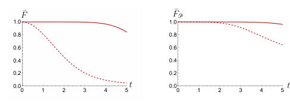
<figcaption class="paper-figure-caption"><b>Fig 1.</b> FIG. 2. Left: Comparison of the (doubly) average fidelity ¯F between the Zeno (dashed curve) and super-Zeno (solid curve) schemes for the spin-13/2 1-anticoherent 2-plane given in [23]. The interaction Hamiltonian is H(1) ∝B · S, normalized ac- cording to (6), and the corresponding fidelity is averaged by letting B point along the vertices of an icosahedron. Both schemes involve the same number of operations —four mea- surements for Zeno, four pulses for super-Zeno. Right: Simi- lar comparison as on the left but for the freezing fidelity ¯FP.</figcaption>
</figure>
<figure class="paper-figure-card">
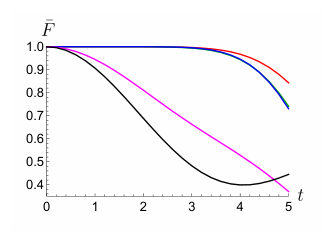
<figcaption class="paper-figure-caption"><b>Fig 2.</b> FIG. 3. Comparison of ¯F for different orders of anticoherence, using 4 pulses and averaging H(1) ∝B · S over the direction of B. The Hamiltonians were normalized as in (6). The red, green (hidden behind the blue), and blue curves correspond to the 1-, 2-, and 3-anticoherent planes given in [23], respectively; the black curve corresponds to the coherent plane, and the magenta curve to a generic plane, as explained in the text.</figcaption>
</figure>
<figure class="paper-figure-card">
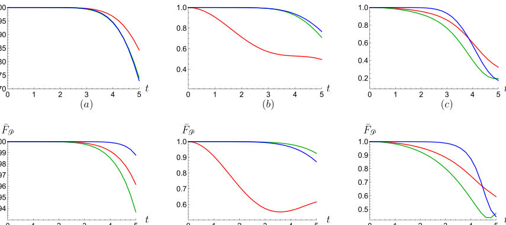
<figcaption class="paper-figure-caption"><b>Fig 3.</b> FIG. 4. Comparison of ¯F (top row) and ¯FP (bottom row) for the super-Zeno scheme with 4 pulses. The red, green, and blue curves correspond to the 1-, 2-, and 3-anticoherent subspaces given in [23], respectively. The Hamiltonians considered are of the form H ∝(B · S)n and normalized according to (6), with n = 1 (first column), n = 2 (second column), and n = 3 (third column). In plots (a), (b) and (e), the blue curve partially blocks the green one. Note also the difference in the vertical scales used: for n = 1, the average fidelities are significantly higher, for the same value of t, than in the other cases.</figcaption>
</figure>
<figure class="paper-figure-card">
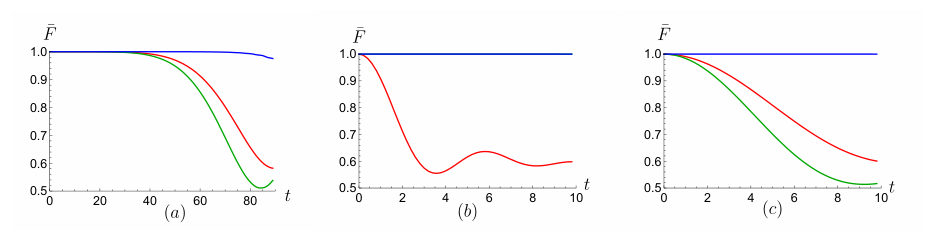
<figcaption class="paper-figure-caption"><b>Fig 4.</b> FIG. 5. Comparison of ¯F after applying the 4-pulse super-Zeno scheme 30 consecutive times (the total duration, in each case, can be read off the horizontal axis). The red, green, and blue curves correspond to the 1-, 2-, and 3-anticoherent 2-planes given in [23], respectively. Using the normalization of (6), we consider a Hamiltonian of the form H ∝(B · S)n, with (a) n = 1, (b) n = 2, and (c) n = 3. In plot (b), only two curves are visible because the blue curve completely blocks the green one. Note also the difference in time scale in plot (a). In this grid, we omit the curves for ¯FP, since they are visually indistinguishable from those of ¯F, indicating that after 30 applications of the...</figcaption>
</figure>
</div>

<p><strong>Summary.</strong> This paper proposes a robust method for protecting quantum states by combining the Super-Zeno Effect with the concept of anticoherence in spin systems. By confining the state to a specially defined anticoherent subspace and applying periodic unitary pulses, the authors demonstrate that quantum evolution can be effectively 'frozen' against environmental noise to arbitrarily high orders in time. This offers a powerful theoretical framework for building more resilient quantum hardware.</p>
<p><strong>Why it may be interesting.</strong> This work provides a powerful theoretical toolkit for quantum control, showing how combining geometric constraints (anticoherence) with dynamical control (SZE) can achieve superior noise resilience compared to standard error correction methods.</p>
<details>
<summary>Detailed structure</summary>
<p><strong>Main problem.</strong> The primary goal is to develop and analyze methods for protecting fragile quantum states from environmental noise and decoherence.</p>
<p><strong>Main result.</strong> The combination of the Super-Zeno Effect (SZE) and exploiting spin anticoherent subspaces proves highly effective, allowing for the theoretical freezing of state evolution to arbitrarily high orders in time.</p>
<p><strong>Method.</strong> The authors combine the SZE, which uses periodic unitary pulses, with the concept of anticoherence, which identifies subspaces where the system's evolution is naturally constrained, leading to high-order protection.</p>
<p><strong>Model / system.</strong> The system modeled is a spin system subjected to noise characterized by an $n$-magnetic interaction Hamiltonian, $H \propto (B \cdot S)^n$. The protection mechanism relies on identifying and confining the state to a $q$-anticoherent subspace $P$.</p>
<p><strong>Key observables.</strong> Fidelity ($F$) and Freezing Fidelity ($F_P$) are the key observables used to quantify the degree of state protection against noise.</p>
<p><strong>Important parameters / regimes.</strong> The order of anticoherence ($q$), the degree of the Hamiltonian ($n$), and the number of super-Zeno pulses ($K$) are critical parameters governing the protection level.</p>
<p><strong>Assumptions / limitations.</strong> The analysis assumes the initial state resides within the protected anticoherent subspace $P$, and the protocol relies on the ability to apply precise, periodic unitary pulses.</p>
<p><strong>Figures summary.</strong> Figures compare the fidelity ($ar{F}$) achieved using standard Zeno vs. super-Zeno effects, and demonstrate that increasing the order of anticoherence ($q=1, 2, 3$) significantly improves the protection time for a given Hamiltonian.</p>
<p><strong>Paper structure.</strong> The paper systematically introduces the problem of noise protection, defines the mathematical tools (SZE, anticoherence), derives the conditions for protection, and then analyzes the performance using fidelity measures for various orders of protection.</p>
</details>
<details>
<summary>Abstract</summary>
<p>We consider a spin system coupled to a noisy environment via an interaction Hamiltonian $H$ which is a polynomial of degree $n$ in the spin operators $S_i$ ($n$-magnetic Hamiltonian), and show that the use of the quantum super-Zeno effect in conjunction with a spin-anticoherent subspace, is highly effective in protecting the spin from the noise. When $n=1$, as in the case of unwanted rotations induced by stray magnetic fields, our scheme provides a quantum gyroscope, a concept that generalizes naturally to higher $n$ values (a quantum $n$-gyroscope). The gist of the proposed protocol is to use the quantum super-Zeno effect to confine a state to the subspace, and then exploit anticoherence to freeze its evolution within it.</p>
</details>
<p><sub><a href="#top">↑ back to top</a></sub></p>

<p><a id="paper-2606.04791"></a></p>
<h3 id="surface-charge-doping-for-ion-pairing-criticality-in-confined-electrolytes"><a href="http://arxiv.org/abs/2606.04791v1">Surface Charge Doping for Ion-Pairing Criticality in Confined Electrolytes</a></h3>
<p><strong>Authors:</strong> Na Shen, Yabei Wu, Wenqing Zhang<br>
<strong>Type:</strong> theory · <strong>Category:</strong> statistical mechanics · <strong>PDF:</strong> <a href="https://arxiv.org/pdf/2606.04791v1">https://arxiv.org/pdf/2606.04791v1</a><br>
<strong>Analysis basis:</strong> full PDF text, analyzed in chunks
<strong>Topic relevance:</strong> <code>Keldysh / 2PI / non-Gaussian methods</code> <strong>1/5</strong> · <code>driven-dissipative phase transition</code> <strong>1/5</strong> · <code>methods for driven-dissipative</code> <strong>1/5</strong></p>
<div class="figure-strip-hint">↔ Scroll figures horizontally</div>
<div class="paper-figures-scroll">
<figure class="paper-figure-card">
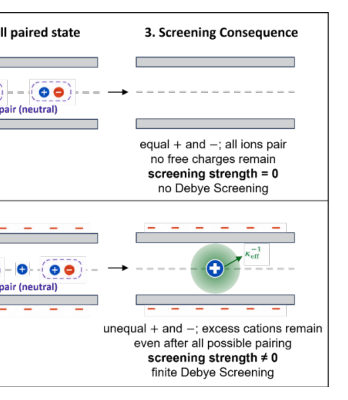
<figcaption class="paper-figure-caption"><b>Fig 1.</b> Figure 1. A neutral slit can approach a paired, carrier-depleted state, whereas a charged slit must</figcaption>
</figure>
<figure class="paper-figure-card">
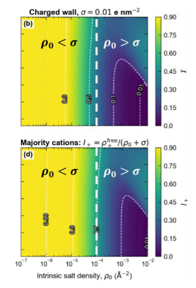
<figcaption class="paper-figure-caption"><b>Fig 2.</b> Figure 2. Stoichiometric decoupling of Bjerrum pairing and density-weighted ionicity. (a)</figcaption>
</figure>
<figure class="paper-figure-card">

<figcaption class="paper-figure-caption"><b>Fig 3.</b> Figure 3, minority anions are strongly depleted at low intrinsic density, whereas majority cations</figcaption>
</figure>
<figure class="paper-figure-card">
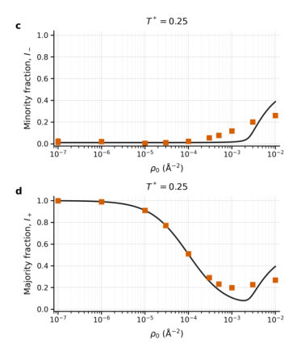
<figcaption class="paper-figure-caption"><b>Fig 4.</b> Figure 3. BD validation. Fixed-temperature line cuts of the species-resolved free fractions</figcaption>
</figure>
<figure class="paper-figure-card">

<figcaption class="paper-figure-caption"><b>Fig 5.</b> Fig. 2, and orange squares are BD means from three independent seeds with error bars showing</figcaption>
</figure>
</div>

<p><strong>Summary.</strong> This work analyzes how imposing a weak surface charge on confined electrolytes modifies their ionic stability. Using advanced statistical mechanics theory, the authors show that the surface charge acts as a doping agent, preventing complete ion depletion and suppressing the critical temperature for ion pairing. This reveals a universal scaling law governing the interplay between surface chemistry, confinement, and correlated ionic behavior.</p>
<p><strong>Why it may be interesting.</strong> The concept of surface charge acting as a tunable 'thermodynamic doping field' to control phase transitions and transport in confined ionic systems is highly relevant to understanding interfacial phenomena in quantum materials and nanoscale devices.</p>
<details>
<summary>Detailed structure</summary>
<p><strong>Main problem.</strong> The study investigates how weak surface charge doping modifies the ion-pairing criticality in quasi-two-dimensional electrolytes, specifically examining the decoupling between microscopic pairing and macroscopic ionicity.</p>
<p><strong>Main result.</strong> Surface charge doping suppresses the association-driven thermodynamic instability by maintaining a finite screening floor via mobile counterions, causing the critical temperature to collapse onto a single scaled perturbation variable.</p>
<p><strong>Method.</strong> The authors employ a generalized Debye-Huckel-Bjerrum theory, supplemented by Brownian-dynamics simulations, to analyze the free energy and stability criteria.</p>
<p><strong>Model / system.</strong> The system is a monovalent 1:1 electrolyte confined in an angstrom-scale slit with planar walls carrying a uniform surface charge. The theory treats surface charge as a thermodynamic doping field influencing the Coulomb correlations.</p>
<p><strong>Key observables.</strong> Screening strength ($\kappa_{	ext{eff}}^2$), ionic fractions ($I_{\pm}, I$), critical temperature ($T_c^*$), and in-plane diffusion coefficient ($D_{xy}$).</p>
<p><strong>Important parameters / regimes.</strong> Surface charge density ($\sigma$), slit width ($h$), intrinsic salt density ($
ho_0$), and the dimensionless ratio $\chi = 
ho_0 / \sigma$.</p>
<p><strong>Assumptions / limitations.</strong> The analysis primarily focuses on the weak surface-coupling regime ($h/\lambda_{	ext{GC}} \ll 1$) and assumes the counterions are part of the quasi-2D Coulomb fluid.</p>
<p><strong>Figures summary.</strong> Figures illustrate the difference between neutral and charged slits regarding ionicity, show the suppression of $T_c^*$ vs. $\sigma$, and demonstrate the collapse of this suppression onto a scaled perturbation variable $X_{\xi}$.</p>
<p><strong>Paper structure.</strong> The paper progresses from establishing the physical problem (surface doping effects) to developing the generalized theory, analyzing the resulting decoupling of ion species, and finally validating the theoretical predictions using both scaling laws and explicit Brownian dynamics simulations.</p>
</details>
<details>
<summary>Abstract</summary>
<p>Dielectric confinement strengthens Coulomb correlations in quasi-two-dimensional electrolytes and can promote Bjerrum pairing in charge-neutral slits. Here we use a generalized Debye-Huckel-Bjerrum theory to show that weak surface charge changes this picture by stoichiometrically doping the slit with mobile counterions. These counterions maintain a finite screening floor, decouple microscopic pairing from macroscopic ionicity, and shift association-driven criticality to lower temperatures. The critical-temperature suppression collapses onto a single scaled perturbation variable, revealing how surface charge and dielectric confinement jointly control charged nanofluidic slits. Brownian-dynamics tests further show that the same counterions are not always fully bulk-like diffusive: at low intrinsic salt density, explicit wall charge slows in-plane diffusion, whereas at higher intrinsic density the wall-induced diffusion penalty decreases and the mobile-counterion description becomes dynamically accurate. These results identify surface charge as a thermodynamic doping field that tunes both correlated ionic stability and the diffusion mechanism in nanofluidic confinement.</p>
</details>
<p><sub><a href="#top">↑ back to top</a></sub></p>

<p><a id="paper-2606.05013"></a></p>
<h3 id="coherent-state-path-integral-monte-carlo"><a href="http://arxiv.org/abs/2606.05013v1">Coherent State Path Integral Monte Carlo</a></h3>
<p><strong>Authors:</strong> Riccardo Fantoni<br>
<strong>Type:</strong> theory · <strong>Category:</strong> other · <strong>PDF:</strong> <a href="https://arxiv.org/pdf/2606.05013v1">https://arxiv.org/pdf/2606.05013v1</a><br>
<strong>Analysis basis:</strong> full PDF text, analyzed in chunks
<strong>Topic relevance:</strong> <code>Keldysh / 2PI / non-Gaussian methods</code> <strong>1/5</strong> · <code>methods for driven-dissipative</code> <strong>1/5</strong></p>
<div class="figure-strip-hint">↔ Scroll figures horizontally</div>
<div class="paper-figures-scroll">
<figure class="paper-figure-card">
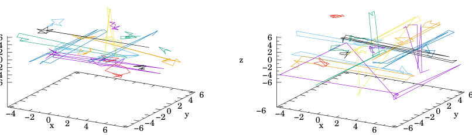
<figcaption class="paper-figure-caption"><b>Fig 1.</b> FIG. 1. We show a comparison between equilibrium snapshots of real paths of a simulation for free distinguishable particles with our coherent states kinetic energy density matrix (left panel) and one with the standard plane waves [15] density matrix (right panel) for a test case of N = 20, m = 1, N/L3 = 0.01, T = 0.3, mh.o.ω = 0.7, M = 10 for which we found ⟨ˆT⟩= 9.0(7) with calculation (3.4) with φ ≈6.5 and the exact result is ⟨ˆT⟩≈8.99999996090802053. Different (real) paths have different colors. In our CSPIMC the ghost paths are not shown but they dance nearby the real paths to which they are bound by the Gaussian of Eq. (2.8). A snapshot of the ghost paths is therefore very similar to the...</figcaption>
</figure>
<figure class="paper-figure-card">
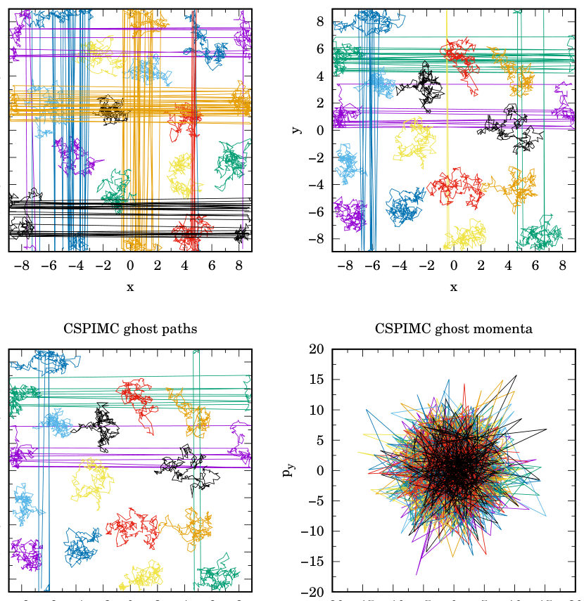
<figcaption class="paper-figure-caption"><b>Fig 2.</b> FIG. 2. We show a snapshot at equilibrium for the paths in the plane wave PIMC and the real paths, ghost paths, and ghost momenta for the CSPIMC for N = 16 4He atoms (m = 0.08306 ≈1/12 ˚A −2K−1) in two dimensions interacting with a Lennard-Jones pair potential with parameters [35] σ = 2.556 ˚A, ε = 10.22 K and a cutoffdistance rcut = 2.5 ˚A, at a density N/L2 = 0.05 ˚A −2 and a temperature T = 1.0 K with M = 250, 2ξ = 40, ϕ = 24/25 in Boltzmann statistics. Different colors refer to different real or ghost atoms.</figcaption>
</figure>
<figure class="paper-figure-card">
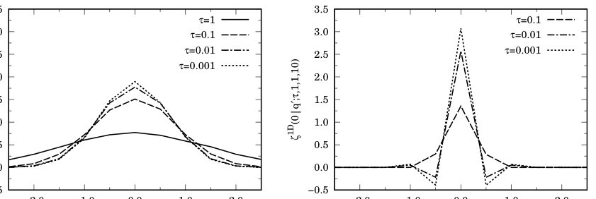
<figcaption class="paper-figure-caption"><b>Fig 3.</b> FIG. 3. We show the one dimensional ζ1D(q|q′; τ, m, ξ) calculated with a Monte Carlo scheme using 107 (with the related statistical error) sampling points and choosing smaller and smaller timestep τ. All the four integrations over the ghost variables (qa, pa) and (qb, pb) were chosen in the interval [−l, l], l = 10 (with the related finite size error). On the left mh.o. = 1 on the right mh.o. = 10. Note that the slight negative values for the high mh.o. and small τ case are numerical artifacts due to the finite size, l &lt; ∞, error.</figcaption>
</figure>
</div>

<p><strong>Summary.</strong> This paper introduces the Coherent State Path Integral Monte Carlo (CSPIMC) method, a new technique for simulating quantum many-body liquids at finite temperature. It replaces the standard plane-wave basis with coherent states of a harmonic oscillator, offering a tunable parameter that enhances computational efficiency. The method successfully reproduces known thermodynamic limits for kinetic energy estimators.</p>
<p><strong>Why it may be interesting.</strong> The ability to tune the harmonic oscillator stiffness ($\xi$) to improve computational efficiency by allowing larger imaginary time steps is a significant algorithmic advancement for simulating quantum dynamics.</p>
<details>
<summary>Detailed structure</summary>
<p><strong>Main problem.</strong> To develop a novel and computationally efficient quantum simulation method for studying many-body quantum liquids at finite temperature.</p>
<p><strong>Main result.</strong> The proposed Coherent State Path Integral Monte Carlo (CSPIMC) method successfully reconstructs the thermal density matrix, showing convergence to known results while offering a tunable parameter ($\xi$) that allows for larger imaginary time steps.</p>
<p><strong>Method.</strong> The method expands the high-temperature density matrix using the overcomplete set of single-particle coherent states of a Harmonic Oscillator, contrasting with conventional plane-wave path integral methods.</p>
<p><strong>Model / system.</strong> The system is a many-body quantum liquid of identical particles (bosons/fermions) governed by a thermal density matrix $\hat{
ho} = \exp(-eta \hat{H})$. The method is tested on free particles and extended to systems like liquid Helium.</p>
<p><strong>Key observables.</strong> Kinetic energy ($\langle\hat{T}
angle$), potential energy ($\langle\hat{V}
angle$), and the factor $\phi$ used in the kinetic energy estimator.</p>
<p><strong>Important parameters / regimes.</strong> Inverse temperature ($eta$), imaginary time step ($   au$), and the stiffness parameter ($\xi$) of the harmonic oscillator, which can be tuned.</p>
<p><strong>Assumptions / limitations.</strong> The method does not solve the Feynman sign problem for fermions, and the kinetic action approximation relies on the properties of coherent states.</p>
<p><strong>Figures summary.</strong> Figures compare path snapshots between CSPIMC and standard PIMC for free particles, and tables detail the dependence of the factor $\phi$ on simulation parameters.</p>
<p><strong>Paper structure.</strong> The paper introduces the CSPIMC formalism by replacing plane waves with coherent states, derives the necessary path integral elements, analyzes the limiting cases (stiff HO, thermodynamic limit), and compares results against standard PIMC methods.</p>
</details>
<details>
<summary>Abstract</summary>
<p>We propose a new quantum simulation method for a many body quantum liquid of identical particles at finite (non-zero) temperature. The new scheme expands the high temperature density matrix on the overcomplete set of single particles coherent states of John Rider Klauder instead of the usual plane waves as in conventional path integral methods. One is free to tune the elastic constant and/or the mass of the harmonic oscillator subtending the coherent states so as to maximize the computational efficiency of the algorithm. We prove that in the limit of an extremely stiff harmonic oscillator the results for the internal energy tends towards the correct expected values. Moreover we suggest that a stiff harmonic oscillator could allow the use of larger (imaginary) timesteps. This additional degree of freedom is the characteristic feature of our new algorithm and is not available in more conventional path integral methods.</p>
</details>
<p><sub><a href="#top">↑ back to top</a></sub></p>

<p><a id="paper-2606.04252"></a></p>
<h3 id="high-density-high-mobility-ultrathin-spin-polarized-two-dimensional-electron-gas-at-the-polarpolar-lavomath601mathktaomath602math-interface-insights-from-first-principles-calculations"><a href="http://arxiv.org/abs/2606.04252v1">High-density, high-mobility ultrathin spin-polarized two-dimensional electron gas at the polar/polar LaVO$_3$/KTaO$_3$ interface: Insights from first-principles calculations</a></h3>
<p><strong>Authors:</strong> Arpan Das<br>
<strong>Type:</strong> theory · <strong>Category:</strong> strongly correlated electrons · <strong>PDF:</strong> <a href="https://arxiv.org/pdf/2606.04252v1">https://arxiv.org/pdf/2606.04252v1</a><br>
<strong>Analysis basis:</strong> full PDF text, analyzed in chunks
<strong>Topic relevance:</strong> <code>analog quantum simulation</code> <strong>1/5</strong> · <code>spintronics-quantum-optics interface</code> <strong>1/5</strong></p>
<div class="figure-strip-hint">↔ Scroll figures horizontally</div>
<div class="paper-figures-scroll">
<figure class="paper-figure-card">
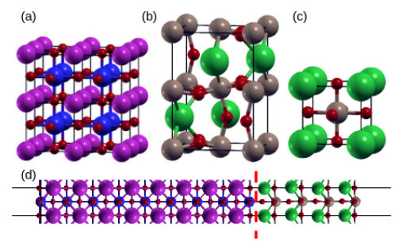
<figcaption class="paper-figure-caption"><b>Fig 1.</b> FIG. 1. Atomic structures of (a) cubic KTaO3, (b) or- thorhombic LaVO3, (c) tetragonal LaVO3, and (d) the vacuum/(LVO)4/(KTO)8.5 slab. The dashed red line indi- cates the interface. Color code: purple (K), blue (Ta), red (O), green (La), and brown (V).</figcaption>
</figure>
<figure class="paper-figure-card">
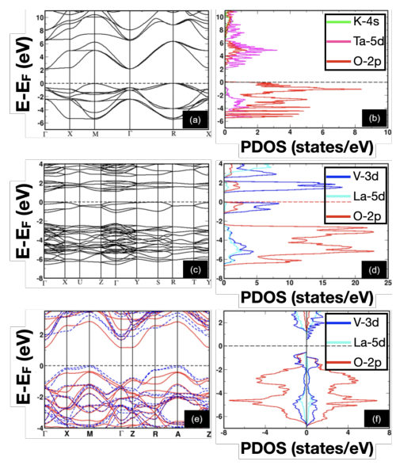
<figcaption class="paper-figure-caption"><b>Fig 2.</b> FIG. 2. Electronic band structures and orbital-projected den- sity of states (PDOS) of (a)–(b) cubic KTaO3, (c)–(d) or- thorhombic LaVO3, and (e)–(f) tetragonal LaVO3. In (e), solid red and dashed blue lines indicate the spin-up and spin- down bands, respectively. Color code of PDOS: magenta (Ta 5d), red (O 2p), blue (V 3d), cyan (La 5d), and green (K 4s) orbitals. The horizontal dashed black line represents the Fermi level of the corresponding system.</figcaption>
</figure>
<figure class="paper-figure-card">
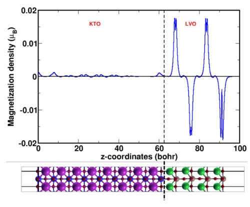
<figcaption class="paper-figure-caption"><b>Fig 3.</b> FIG. 3. Planar-averaged magnetization density as a function of the z coordinate for the vacuum/(LVO)4/(KTO)8.5 slab. The atomic structure of the slab is shown below to identify the layers at each z position. The vertical dashed black line indicates the interface. Color code: purple (K), blue (Ta), red (O), green (La), and brown (V).</figcaption>
</figure>
<figure class="paper-figure-card">
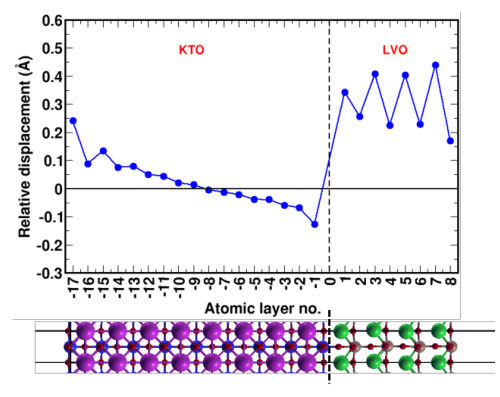
<figcaption class="paper-figure-caption"><b>Fig 4.</b> FIG. 4. Relative cation-anion displacement for each layer in the vacuum/(LVO)4/(KTO)8.5 slab. Atomic layers are num- bered by positive and negative integers for the LVO and KTO regions, respectively, starting from the interface. The atomic structure of the slab is shown below to identify the layers. The vertical dashed black line indicates the interface. Color code: purple (K), blue (Ta), red (O), green (La), and brown (V).</figcaption>
</figure>
<figure class="paper-figure-card">
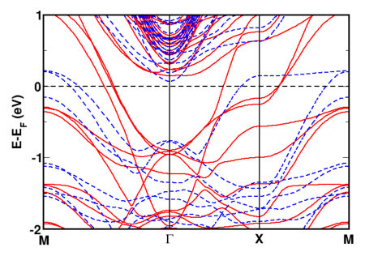
<figcaption class="paper-figure-caption"><b>Fig 5.</b> FIG. 5. Band structure of the vacuum/(LVO)4/(KTO)8.5 slab. Solid red and dashed blue lines represent the spin-up and spin-down bands, respectively. The horizontal dashed black line indicates the Fermi level of the system.</figcaption>
</figure>
</div>

<p><strong>Summary.</strong> This theoretical study uses DFT+U calculations to investigate the LaVO3/KTaO3 interface, finding that the metallic 2DEG arises from charge transfer driven by polar discontinuity. The resulting 2DEG is highly confined, spin-polarized, and possesses an exceptionally small effective mass, suggesting potential for high-mobility quantum electronic applications.</p>
<p><strong>Why it may be interesting.</strong> The study models charge transfer and electronic reconstruction in a strongly correlated oxide system, which is a key area for understanding emergent quantum phenomena in solid-state devices.</p>
<details>
<summary>Detailed structure</summary>
<p><strong>Main problem.</strong> To uncover the microscopic origin and characterize the properties of the two-dimensional electron gas (2DEG) formed at the polar/polar LaVO3/KTaO3 interface.</p>
<p><strong>Main result.</strong> The 2DEG is highly confined, spin-polarized, and originates from an electronic reconstruction driven by charge transfer across the interface, exhibiting an exceptionally small effective mass.</p>
<p><strong>Method.</strong> First-principles density functional theory (DFT) calculations, incorporating DFT+U methods to treat strong electronic correlations in the Mott insulator component.</p>
<p><strong>Model / system.</strong> The physical system is the LaVO3/KTaO3 heterostructure, modeled as a slab. The study investigates the electronic reconstruction mechanism that stabilizes the metallic state at the interface.</p>
<p><strong>Key observables.</strong> Spin-up parabolic band effective mass ($m^*$), interfacial electron density, layer-resolved charge density, and polarization vectors.</p>
<p><strong>Important parameters / regimes.</strong> Hubbard U and J parameters for V 3d and Ta 5d orbitals; comparison to the LaAlO3/SrTiO3 interface.</p>
<p><strong>Assumptions / limitations.</strong> The metallic state arises from an electronic reconstruction to avoid the polar catastrophe; the A-AFM magnetic ordering is assumed to be the ground state.</p>
<p><strong>Figures summary.</strong> Figures show layer-resolved PDOS confirming Ta 5d orbital contribution, band structures illustrating the parabolic 2DEG band, and charge density maps confirming 2D confinement at the interface.</p>
<p><strong>Paper structure.</strong> The paper first establishes the physical context (polar/polar interface) and computational methods (DFT+U). It then analyzes the magnetic and polarization states, leading to the key finding of electronic reconstruction, which finally characterizes the resulting high-mobility, spin-polarized 2DEG.</p>
</details>
<details>
<summary>Abstract</summary>
<p>The emergence of high-mobility two-dimensional electron gases (2DEGs) at oxide interfaces provides a fertile platform for exploring emergent quantum phenomena and next-generation oxide electronics. Here, using first-principles density functional theory (DFT) calculations, we investigate the microscopic origin of the 2DEG formed at the interface between the band insulator KTaO$_3$ (KTO) and the Mott insulator LaVO$_3$ (LVO). Although both constituents are insulating in bulk, the LVO/KTO heterostructure develops robust metallicity at the interface, consistent with experimental observations. Our calculations show that this metallic state originates from an electronic reconstruction driven by the polar discontinuity across the interface. To avoid the polar catastrophe on both the polar LVO film and the polar KTO substrate, electrons are transferred from the outer surfaces toward the interface, leading to hole accumulation in the surface VO$_2$ layer and electron accumulation in the interfacial TaO$_2$ layer. This charge redistribution stabilizes a highly confined and spin-polarized 2DEG localized at the interface. The electronic states forming the 2DEG are predominantly derived from interfacial Ta $5d_{xy}$ orbitals, confining carrier motion to the interfacial plane. Remarkably, the spin-up parabolic band hosting the 2DEG exhibits an exceptionally small effective mass, substantially lower than that of the prototypical LaAlO$_3$/SrTiO$_3$ interface, indicating the potential for enhanced carrier mobility. Furthermore, the calculated interfacial electron density is nearly an order of magnitude larger than that of LaAlO$_3$/SrTiO$_3$, consistent with experiment. These findings identify the LVO/KTO heterostructure as a promising platform for realizing high-density, high-mobility spin-polarized 2DEGs and for engineering correlated oxide interfaces for quantum electronic applications.</p>
</details>
<p><sub><a href="#top">↑ back to top</a></sub></p>

<p><a id="paper-2606.04940"></a></p>
<h3 id="convergence-rates-of-sum-of-hermitian-squares-hierarchies-for-the-pauli-algebra"><a href="http://arxiv.org/abs/2606.04940v1">Convergence rates of Sum-of-Hermitian-Squares Hierarchies for the Pauli algebra</a></h3>
<p><strong>Authors:</strong> Ali Almasi, Dávid Bugár, Cambyse Rouzé, Peter Brown<br>
<strong>Type:</strong> theory · <strong>Category:</strong> quantum information and computing · <strong>PDF:</strong> <a href="https://arxiv.org/pdf/2606.04940v1">https://arxiv.org/pdf/2606.04940v1</a><br>
<strong>Analysis basis:</strong> full PDF text, analyzed in chunks
<strong>Topic relevance:</strong> <code>analog quantum simulation</code> <strong>1/5</strong></p>
<div class="figure-strip-hint">↔ Scroll figures horizontally</div>
<div class="paper-figures-scroll">
<figure class="paper-figure-card">
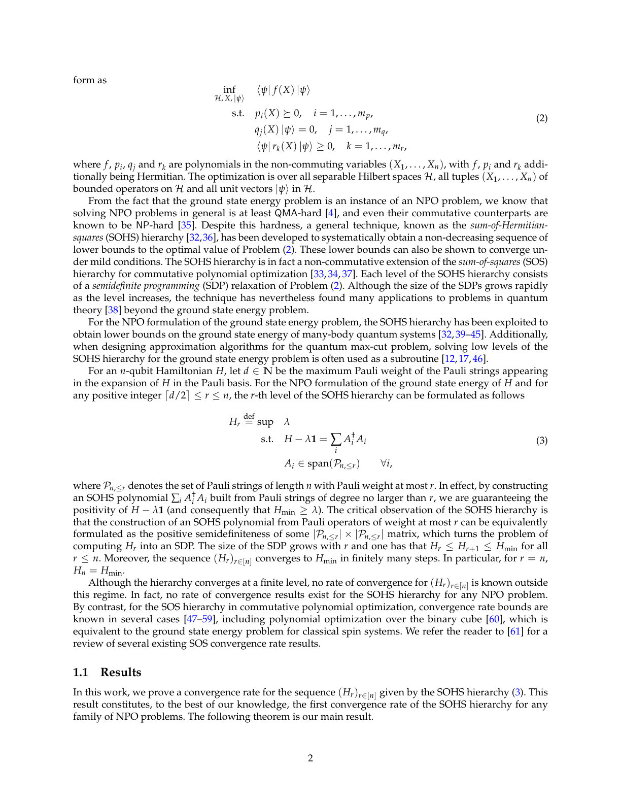
<figcaption class="paper-figure-caption"><b>Fig 1.</b> Low-resolution page preview, page 2</figcaption>
</figure>
<figure class="paper-figure-card">
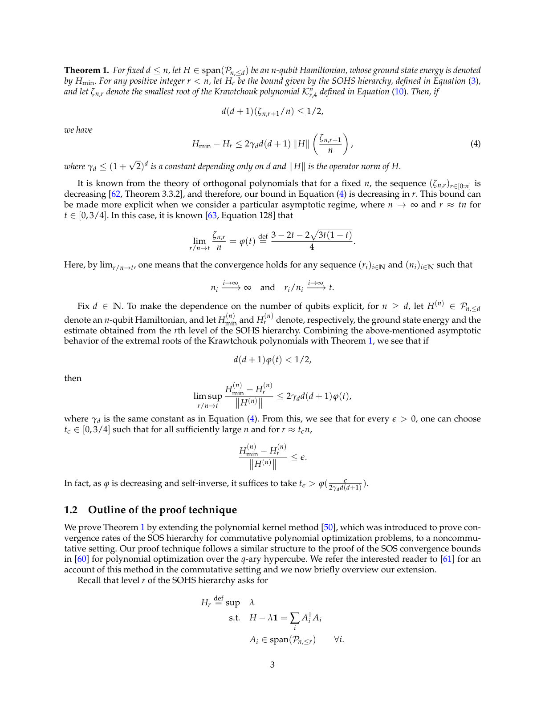
<figcaption class="paper-figure-caption"><b>Fig 2.</b> Low-resolution page preview, page 3</figcaption>
</figure>
<figure class="paper-figure-card">
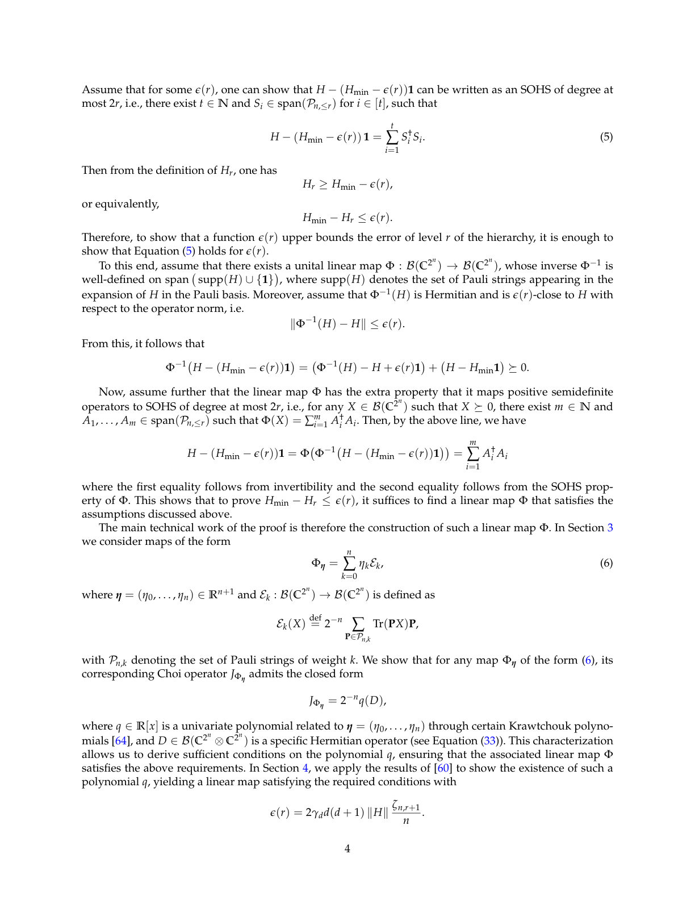
<figcaption class="paper-figure-caption"><b>Fig 3.</b> Low-resolution page preview, page 4</figcaption>
</figure>
<figure class="paper-figure-card">
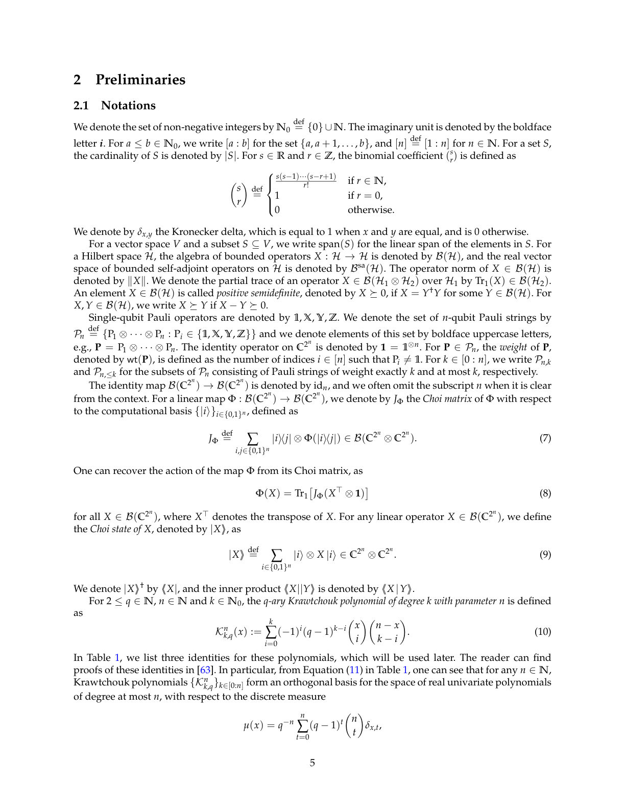
<figcaption class="paper-figure-caption"><b>Fig 4.</b> Low-resolution page preview, page 5</figcaption>
</figure>
<figure class="paper-figure-card">
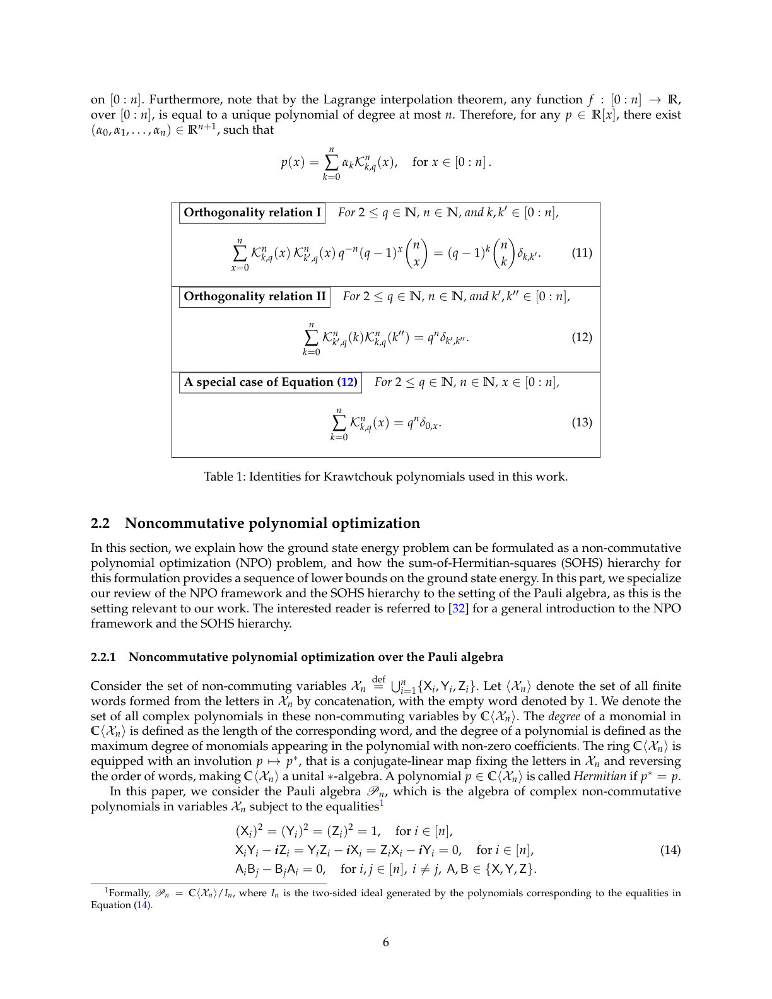
<figcaption class="paper-figure-caption"><b>Fig 5.</b> Low-resolution page preview, page 6</figcaption>
</figure>
</div>

<p><strong>Summary.</strong> This paper rigorously analyzes the convergence rate of Sum-of-Hermitian-Squares (SOHS) relaxations used to find the ground state energy of $n$-qubit systems. By extending techniques from commutative optimization to the non-commutative Pauli algebra, the authors derive an explicit error bound dependent on Krawtchouk polynomials. This provides a major quantitative advance in the mathematical analysis of quantum many-body problems.</p>
<p><strong>Why it may be interesting.</strong> This work provides rigorous mathematical tools to analyze the convergence of quantum many-body approximations, which is vital for developing reliable quantum simulation algorithms and understanding the limits of current optimization techniques for quantum chemistry and materials science.</p>
<details>
<summary>Detailed structure</summary>
<p><strong>Main problem.</strong> The paper develops explicit convergence rates for Sum-of-Hermitian-Squares (SOHS) relaxations applied to noncommutative polynomial optimization problems (NPO). This is crucial for accurately estimating ground state energies in quantum systems.</p>
<p><strong>Main result.</strong> The authors provide a quantitative upper bound on the error, showing the convergence rate is governed by the smallest roots of Krawtchouk polynomials, representing the first such analysis for this class of problems.</p>
<p><strong>Method.</strong> The technique extends the polynomial kernel method from commutative SOS hierarchies to the non-commutative setting of the Pauli algebra, utilizing specialized linear maps $\Phi_\eta$ and properties derived from Krawtchouk polynomials.</p>
<p><strong>Model / system.</strong> The focus is on the ground state energy problem for $n$-qubit systems, formulated as an NPO problem over the Pauli algebra. The analysis uses the SOHS hierarchy, which generates a sequence of lower bounds ($H_r$) to the true minimum energy ($H_{\min}$).</p>
<p><strong>Key observables.</strong> The primary observable is the error bound, $H_{\min} - H_r$, which is quantified in terms of the smallest root $\zeta_{n,r+1}$ of the Krawtchouk polynomial $K_{n,r+1}^{(4)}(x)$.</p>
<p><strong>Important parameters / regimes.</strong> The parameters include the number of qubits ($n$), the level of the hierarchy ($r$), the maximum Pauli weight ($d$), and the Krawtchouk polynomial roots $\zeta_{n,r+1}$.</p>
<p><strong>Assumptions / limitations.</strong> The derivation relies on constructing a linear map $\Phi_\eta$ satisfying specific algebraic properties (P0)-(P3) within the Pauli algebra structure.</p>
<p><strong>Paper structure.</strong> The paper builds by first establishing the necessary algebraic framework (Pauli algebra, diagonal maps $A_k, E_k$) using Krawtchouk polynomials, then deriving the required linear map $\Phi_\eta$ that satisfies the necessary properties, and finally applying this structure to derive the explicit convergence rate bound for the SOHS hierarchy.</p>
</details>
<details>
<summary>Abstract</summary>
<p>Moment/Sum-of-Hermitian-Squares relaxations for noncommutative polynomial optimization problems have become an important tool for analyzing problems within quantum theory. Despite their widespread success, little is known about their rate of convergence and, consequently, their accuracy. In this work, we develop explicit convergence rates for relaxations of noncommutative polynomial optimization problems generated from the Pauli algebra -- covering applications to the ground state energy problem for n-qubit systems. In particular, we show that the rate of convergence can be bounded in terms of the smallest roots of a family of orthogonal polynomials known as Krawtchouk polynomials. Our result represents the first quantitative analysis of the rate of convergence for relaxations of noncommutative polynomial optimization problems.</p>
</details>
<p><sub><a href="#top">↑ back to top</a></sub></p>

<p><a id="paper-2606.04686"></a></p>
<h3 id="digital-quantum-reservoir-computing-for-atm-time-series-prediction"><a href="http://arxiv.org/abs/2606.04686v1">Digital Quantum Reservoir Computing for ATM Time Series Prediction</a></h3>
<p><strong>Authors:</strong> Chiara Vercellino, Giacomo Vitali, Valeria Zaffaroni, Francesca Cibrario, Emanuele Dri, Paolo Viviani, Olivier Terzo, Davide Corbelletto<br>
<strong>Type:</strong> experiment · <strong>Category:</strong> quantum information and computing · <strong>PDF:</strong> <a href="https://arxiv.org/pdf/2606.04686v1">https://arxiv.org/pdf/2606.04686v1</a><br>
<strong>Analysis basis:</strong> full PDF text, analyzed in chunks
<strong>Topic relevance:</strong> <code>QC/QI experiment</code> <strong>1/5</strong></p>
<div class="figure-strip-hint">↔ Scroll figures horizontally</div>
<div class="paper-figures-scroll">
<figure class="paper-figure-card">
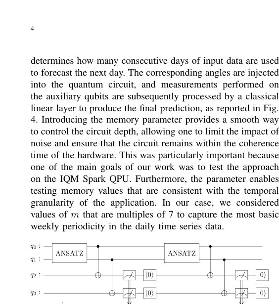
<figcaption class="paper-figure-caption"><b>Fig 1.</b> Fig. 3: Two consecutive circuit blocks. Auxiliary qubits (q2, q3) are measured in a two-bit classical register and reset after each block.</figcaption>
</figure>
<figure class="paper-figure-card">
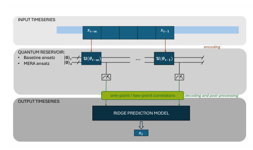
<figcaption class="paper-figure-caption"><b>Fig 2.</b> Fig. 4: Illustrative scheme of the digital QRC. At each time step, m consecutive time series values parameterize the quan- tum reservoir circuit. The resulting measurements are post- processed and fed into a forecasting model to predict xt.</figcaption>
</figure>
<figure class="paper-figure-card">
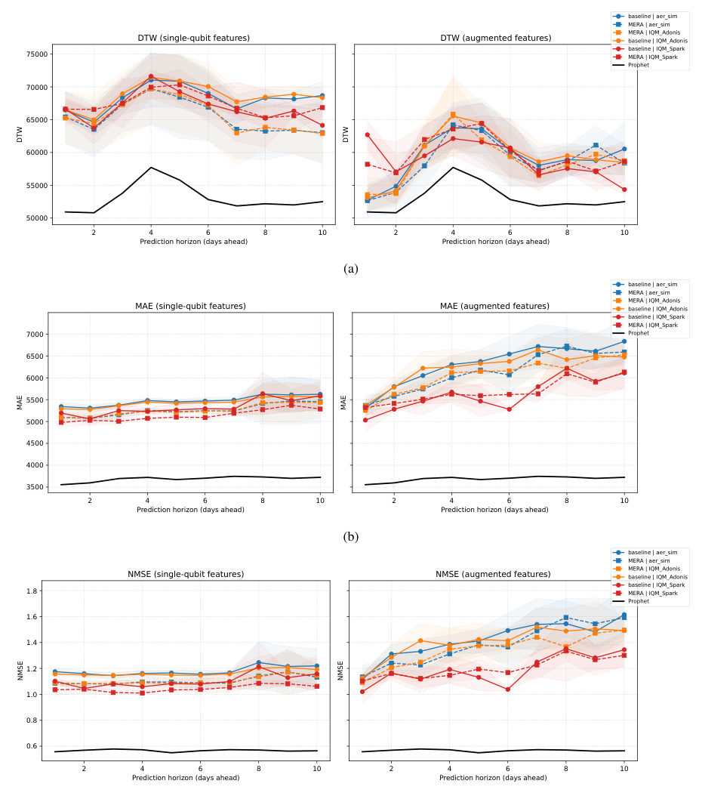
<figcaption class="paper-figure-caption"><b>Fig 3.</b> Fig. 5: Performance metrics as a function of the prediction horizon (h = 1, . . . , 10). The semi-transparent region around each curve represents one standard deviation from the mean for each value of h.</figcaption>
</figure>
<figure class="paper-figure-card">
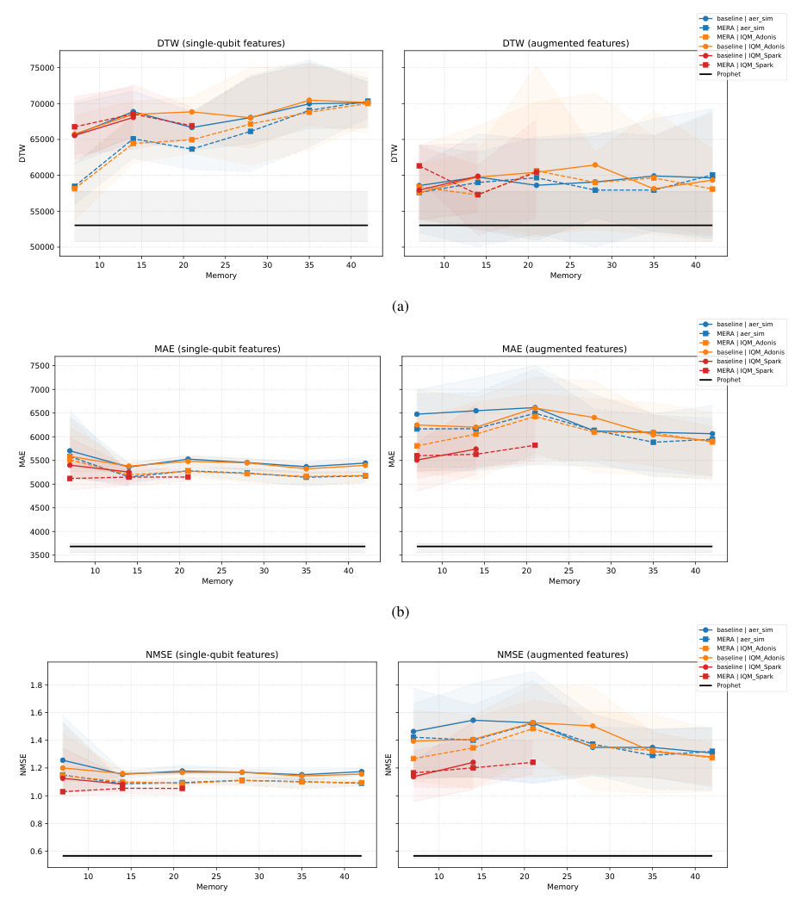
<figcaption class="paper-figure-caption"><b>Fig 4.</b> Fig. 6: Performance metrics as a function of the QRC memory parameter. The metrics are averaged across the prediction horizons. The shaded regions represent the minimum and maximum values obtained in the tested memory configurations. Due to hardware execution time constraints, the memory values m ≥28 (MERA ansatz) and m ≥21 (baseline ansatz) are not included.</figcaption>
</figure>
<figure class="paper-figure-card">
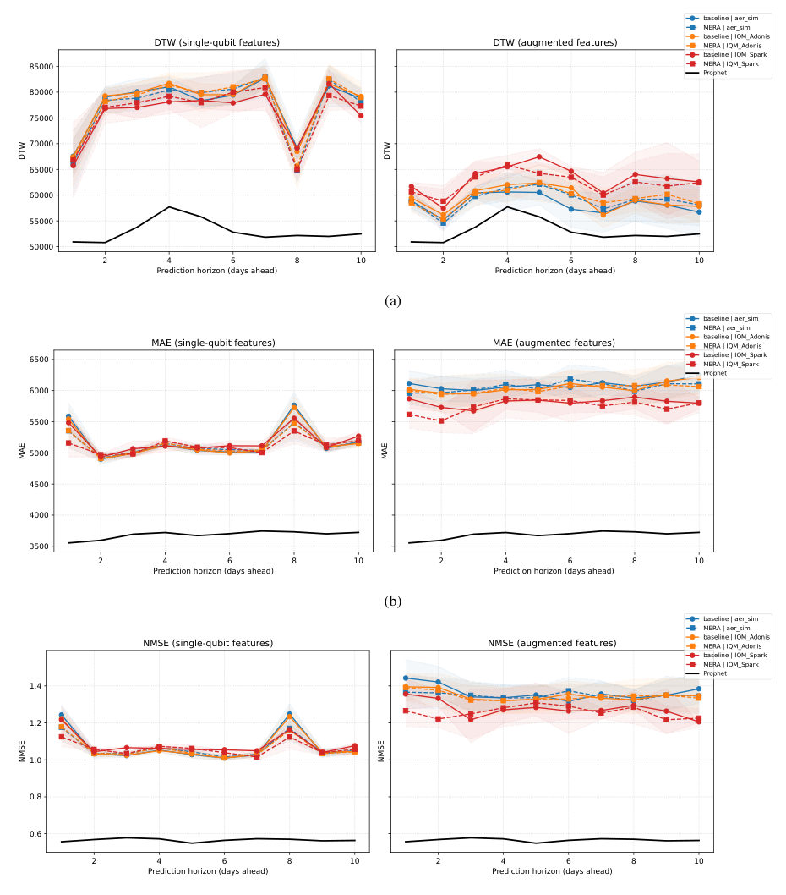
<figcaption class="paper-figure-caption"><b>Fig 5.</b> Fig. 7: Performance metrics as a function of the prediction horizon (h = 1, . . . , 10), obtained using a Ridge regressor chain model after the QRC module. The semi-transparent region around each curve represents one standard deviation from the mean.</figcaption>
</figure>
</div>

<p><strong>Summary.</strong> This paper explores using digital Quantum Reservoir Computing (QRC) to forecast ATM cash demand time series on near-term quantum hardware. The methodology encodes time data into quantum rotations and uses measurements to feed a classical regression model. Although QRC underperforms classical benchmarks on point-wise errors, it shows promise in capturing temporal structure via the DTW metric.</p>
<p><strong>Why it may be interesting.</strong> The work provides an empirical assessment of applying quantum machine learning techniques, specifically QRC, to complex, real-world time series data, which is relevant for understanding how quantum circuits can encode and process temporal correlations.</p>
<details>
<summary>Detailed structure</summary>
<p><strong>Main problem.</strong> The paper investigates using a digital quantum reservoir computing (QRC) framework to forecast multi-step time series data, specifically ATM cash demand.</p>
<p><strong>Main result.</strong> While QRC models did not outperform the classical Prophet benchmark on standard error metrics (MAE, NMSE), they showed more competitive results using the Dynamic Time Warping (DTW) metric, suggesting partial ability to capture temporal structure.</p>
<p><strong>Method.</strong> The approach involves encoding time series data into quantum rotation angles, processing it through parametrized quantum reservoirs (using ansätze like MERA), and reading out classical features via measurements to train a classical Ridge-regression model.</p>
<p><strong>Model / system.</strong> The system is a digital QRC framework utilizing parametrized four-qubit reservoirs. The process involves sequential encoding of time steps into rotation angles and measuring single-qubit expectation values and two-qubit correlators to form the feature vector.</p>
<p><strong>Key observables.</strong> Mean Absolute Error (MAE), Normalized Mean Squared Error (NMSE), and Dynamic Time Warping (DTW) metric.</p>
<p><strong>Important parameters / regimes.</strong> Circuit ansatz (Baseline vs. MERA), reservoir memory ($m$), measurement observables (single vs. two-point correlators), and execution backend (Simulation vs. IQM Spark QPU).</p>
<p><strong>Assumptions / limitations.</strong> Training is restricted to a classical Ridge-regression readout, and the study acknowledges error accumulation in multi-step forecasting.</p>
<p><strong>Figures summary.</strong> Figures illustrate the quantum circuit blocks for the baseline and MERA ansätze, and show performance comparisons (MAE, NMSE, DTW) across different prediction horizons and hardware backends.</p>
<p><strong>Paper structure.</strong> The paper systematically analyzes the impact of various architectural choices (ansätze, memory, observables) on time series forecasting performance, comparing the QRC model against the classical Prophet benchmark across multiple noise models and prediction horizons.</p>
</details>
<details>
<summary>Abstract</summary>
<p>We investigate a digital quantum reservoir computing (QRC) framework for multi-step forecasting of automated teller machine (ATM) cash demand time series on near-term quantum devices. The proposed approach uses parametrized four-qubit reservoirs with a fixed structure exploiting partial measurement and reset, where temporal data is encoded in rotation angles. Training is restricted to a classical Ridge-regression readout. We systematically analyze the impact of the circuit ansatzë, reservoir memory, measurement-derived observables, and the execution backend on the forecasting performance. Experiments are performed with noiseless simulation, noise-aware emulation, and a real IQM Spark quantum processor. Although the QRC models do not outperform the classical Prophet benchmark in terms of Mean Absolute Error and Normalized Mean Squared Error metrics, they achieve more competitive results in Dynamic Time Warping metric, indicating a partial ability to capture temporal structure. These findings provide an empirical assessment of digital QRC for realistic financial forecasting and highlight both its current limitations and its potential on near-term quantum hardware.</p>
</details>
<p><sub><a href="#top">↑ back to top</a></sub></p>

<p><a id="paper-2606.04548"></a></p>
<h3 id="distributed-variational-quantum-optimisation-by-entanglement-selective-transport"><a href="http://arxiv.org/abs/2606.04548v1">Distributed Variational Quantum Optimisation by Entanglement-Selective Transport</a></h3>
<p><strong>Authors:</strong> Edric Matwiejew, Pascal Elahi, Ugo Varetto<br>
<strong>Type:</strong> theory · <strong>Category:</strong> quantum information and computing · <strong>PDF:</strong> <a href="https://arxiv.org/pdf/2606.04548v1">https://arxiv.org/pdf/2606.04548v1</a><br>
<strong>Analysis basis:</strong> full PDF text, analyzed in chunks
<strong>Topic relevance:</strong> <code>entanglement &amp; information structure</code> <strong>1/5</strong></p>
<div class="figure-strip-hint">↔ Scroll figures horizontally</div>
<div class="paper-figures-scroll">
<figure class="paper-figure-card">
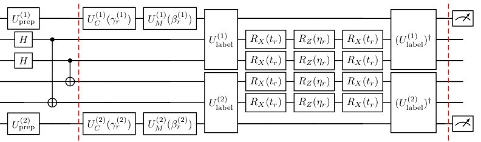
<figcaption class="paper-figure-caption"><b>Fig 1.</b> Fig. 1. Representative depth-p QESTO circuit for two QPUs sharing two distributed edges e1, e2 ∈Edist. Each QPU hosts a local problem register Li and one communication qubit cek,i per incident distributed edge, with one Bell pair prepared across each edge. One ansatz layer applies local cost and mixing unitaries, followed by label encoding, transport, and decoding, as in (12).</figcaption>
</figure>
<figure class="paper-figure-card">
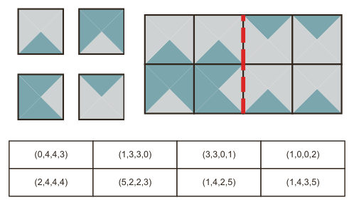
<figcaption class="paper-figure-caption"><b>Fig 2.</b> Fig. 2. Example bounded weighted Wang tile-matching instance from the 2×4 ensemble. The top-left panel shows the tile catalogue, the top-right panel shows a globally optimal solution, and the bottom panel gives the position- dependent tile-assignment costs, with each tuple ordered clockwise from the upper-left catalogue tile. Blue and grey wedges encode the binary edge labels. The vertical red dashed line marks the inter-QPU boundary for optimisation by QESTO and subgraph-QAOA.</figcaption>
</figure>
<figure class="paper-figure-card">
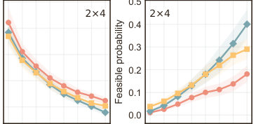
<figcaption class="paper-figure-caption"><b>Fig 3.</b> Fig. 3. QESTO vs. subgraph-QAOA and monolithic QAOA on the 2×2 (top) and 2×4 (bottom) layouts. The left panels show the mean normalised optimality gap g (see (14)) vs. depth p, and the right panels show the mean feasible probability vs. p; shaded bands are ±1 SEM across instances. All points use 20 instances.</figcaption>
</figure>
<figure class="paper-figure-card">
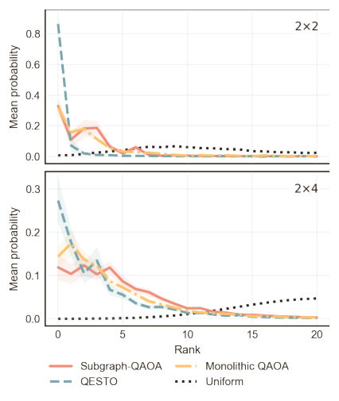
<figcaption class="paper-figure-caption"><b>Fig 4.</b> Fig. 4. Mean cost-rank distributions for the 2×2 ensemble at depth p = 5 (top) and the 2×4 ensemble at depth p = 8 (bottom). Rank 0 denotes the globally optimal cost level, and higher ranks denote successively larger distinct classical cost values. Curves show the mean probability mass across instances; shaded bands are ±1 SEM. The black dotted line shows the distribution obtained by uniform random sampling of the solution space. All points use 20 instances.</figcaption>
</figure>
</div>

<p><strong>Summary.</strong> This paper introduces QESTO, a novel variational ansatz designed for distributed quantum optimization on multiple QPUs. It leverages pre-shared Bell pairs to encode and transport constraint information locally, avoiding costly non-local gates. Benchmarking shows QESTO significantly outperforms standard QAOA methods by efficiently concentrating probability amplitude on low-cost solutions.</p>
<p><strong>Why it may be interesting.</strong> The focus on utilizing persistent entanglement to simulate long-range interactions while minimizing gate overhead is highly relevant for near-term quantum hardware architectures that struggle with high-fidelity, deep non-local gate sequences.</p>
<details>
<summary>Detailed structure</summary>
<p><strong>Main problem.</strong> The paper addresses the challenge of performing distributed quantum optimization for graph-based discrete problems when computing the cost function requires non-local gates across multiple quantum processors.</p>
<p><strong>Main result.</strong> The proposed QESTO ansatz achieves stronger convergence to low-cost solutions than equivalent partitioned QAOA and outperforms monolithic QAOA on benchmark tile-matching problems, suggesting persistent entanglement is key to efficient distributed computation.</p>
<p><strong>Method.</strong> QESTO introduces a variational ansatz that uses persistent, pre-shared Bell pairs to encode local constraint information and facilitate amplitude transfer across distributed edges, minimizing the need for non-local gates during the optimization layers.</p>
<p><strong>Model / system.</strong> The model involves quantum computation distributed over multiple Quantum Processing Units (QPUs) solving graph-based discrete optimization problems, such as weighted Wang tile-matching. The core mechanism relies on local operations and shared entanglement (Bell pairs) to simulate long-range interactions.</p>
<p><strong>Key observables.</strong> Mean normalized optimality gap (g), mean feasible probability of finding low-cost tilings, and the concentration of probability mass near the optimum solution.</p>
<p><strong>Important parameters / regimes.</strong> Ansatz depth (p), the number of distributed edges ($|E_{dist}|$), and variational parameters $\{\gamma_r, eta_r, 	ext{tr}, \eta_r\}$.</p>
<p><strong>Assumptions / limitations.</strong> The approach assumes the ability to utilize persistent Bell pairs, which reduces the overhead associated with repeatedly executing non-local gates compared to gate-teleported methods.</p>
<p><strong>Figures summary.</strong> Figures illustrate the QESTO circuit structure for two QPUs sharing edges, and comparative plots show the mean normalized optimality gap and feasible probability versus ansatz depth for QESTO versus reference QAOA methods.</p>
<p><strong>Paper structure.</strong> The paper first introduces the problem and the QESTO ansatz, detailing its local and entanglement-based layers. It then benchmarks QESTO against subgraph-QAOA and monolithic QAOA on specific tile-matching ensembles, presenting quantitative results on convergence and probability distribution.</p>
</details>
<details>
<summary>Abstract</summary>
<p>Distributed quantum optimisation is challenging because computing the problem cost function across multiple quantum processors requires non-local gates, which can incur overhead in latency and fidelity. Here we introduce QESTO, a distributed variational ansatz for graph-based discrete optimisation that requires only persistent pre-shared Bell pairs for remote operations. Using local operations, it encodes local constraint information in the Bell pairs that is leveraged to produce amplitude transfer towards globally valid distributed solution states. QESTO requires one Bell pair per distributed edge of the problem graph and, after initialisation of the Bell states, uses no non-local gates. On two bounded weighted Wang tile-matching problem ensembles, QESTO achieves stronger convergence to low-cost tilings than equivalently partitioned QAOA with no distributed gates at ansatz depths of two or higher, and exceeds the mean performance of monolithic QAOA at the deepest studied depth in both ensembles. These results suggest that persistent entanglement can support useful variational communication while reducing per-layer non-local gate overhead.</p>
</details>
<p><sub><a href="#top">↑ back to top</a></sub></p>

<p><a id="paper-2606.04331"></a></p>
<h3 id="effect-of-cations-on-van-der-waals-interactions-between-particles-in-aqueous-alkali-nitrate-electrolytes"><a href="http://arxiv.org/abs/2606.04331v1">Effect of cations on van der Waals interactions between particles in aqueous alkali nitrate electrolytes</a></h3>
<p><strong>Authors:</strong> Micah P. Prange, Jaehun Chun, Gregory K. Schenter, Elias Nakouzi, Yihui Wei, Aurora E. Clark, Kevin M. Rosso, Carolyn I. Pearce<br>
<strong>Type:</strong> theory · <strong>Category:</strong> statistical mechanics · <strong>PDF:</strong> <a href="https://arxiv.org/pdf/2606.04331v1">https://arxiv.org/pdf/2606.04331v1</a><br>
<strong>Analysis basis:</strong> full PDF text, analyzed in chunks
<strong>Topic relevance:</strong> <code>Keldysh / 2PI / non-Gaussian methods</code> <strong>1/5</strong></p>
<div class="figure-strip-hint">↔ Scroll figures horizontally</div>
<div class="paper-figures-scroll">
<figure class="paper-figure-card">
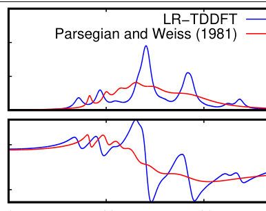
<figcaption class="paper-figure-caption"><b>Fig 1.</b> Figure 1: Real (bottom) and imaginary (top) parts of</figcaption>
</figure>
<figure class="paper-figure-card">
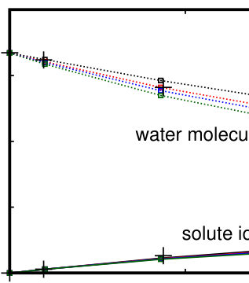
<figcaption class="paper-figure-caption"><b>Fig 2.</b> Figure 2: Number densities of ionic/molecular species</figcaption>
</figure>
<figure class="paper-figure-card">
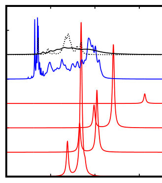
<figcaption class="paper-figure-caption"><b>Fig 3.</b> Figure 3: Photoabsorption cross-section distributions for</figcaption>
</figure>
<figure class="paper-figure-card">
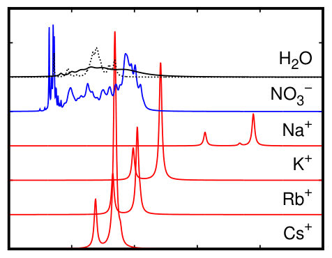
<figcaption class="paper-figure-caption"><b>Fig 4.</b> Figure 4 plots the dielectric functions for 8.7 m solutions of the different NO3- salts (panels a</figcaption>
</figure>
<figure class="paper-figure-card">
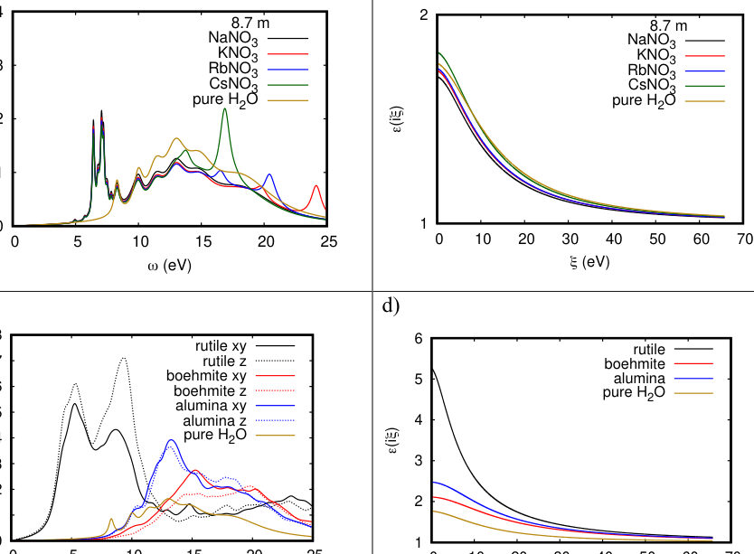
<figcaption class="paper-figure-caption"><b>Fig 5.</b> Figure 4: Imaginary part of the dielectric function 𝜀((𝜔) (a,c) and van der Waals spectrum</figcaption>
</figure>
</div>

<p><strong>Summary.</strong> This theoretical study calculates how van der Waals interactions between nanoparticles are modified by dissolved alkali nitrate electrolytes using an extended Lifshitz theory. By employing advanced electronic structure calculations, the authors find that increasing salt concentration can actually increase the Hamaker constant for certain ions, contradicting older assumptions and highlighting the persistent role of these forces in colloidal stability.</p>
<p><strong>Why it may be interesting.</strong> While focused on classical colloidal forces, the rigorous application of advanced quantum mechanical methods (TDDFT) to model the dielectric response of complex ionic solutions provides a sophisticated theoretical framework for understanding many-body interactions in condensed matter systems.</p>
<details>
<summary>Detailed structure</summary>
<p><strong>Main problem.</strong> The study aims to resolve the incomplete understanding of how electrolytes affect van der Waals interactions between particles, especially at high concentrations.</p>
<p><strong>Main result.</strong> Contrary to prior assumptions, increasing concentrations of $  ext{NaNO}_3$, $ ext{KNO}_3$, and $  ext{RbNO}_3$ cause appreciable increases in the Hamaker constants, suggesting van der Waals interactions remain significant for colloidal stability.</p>
<p><strong>Method.</strong> The authors extended Lifshitz theory by developing a dielectric response model for alkali nitrate solutions, calculated using electronic structure methods like LR-TDDFT.</p>
<p><strong>Model / system.</strong> The system involves nanoparticles (rutile, boehmite, alumina) suspended in aqueous alkali nitrate electrolytes ($   ext{MNO}_3$). The theory models the interaction potential via the Hamaker constant, which depends on the dielectric response of the solvent and ions.</p>
<p><strong>Key observables.</strong> Hamaker constants ($A$), dielectric functions ($\epsilon(\omega)$ and $\epsilon(i\xi)$), and the concentration dependence of these constants.</p>
<p><strong>Important parameters / regimes.</strong> Intermediate and high electrolyte concentrations, the cation identity ($    ext{Na}^+,  ext{K}^+,   ext{Rb}^+,  ext{Cs}^+$), and the temperature ($T=300   ext{K}$).</p>
<p><strong>Assumptions / limitations.</strong> The model neglects Debye-type relaxation ($\hbar_7 = 0$) and assumes the dielectric response can be modeled via linear combinations of molecular/ionic oscillator strengths.</p>
<p><strong>Figures summary.</strong> Figures compare dielectric functions using TDDFT vs. pole models, plot the Hamaker constant vs. cation species and concentration, and show photoabsorption cross-sections for various species.</p>
<p><strong>Paper structure.</strong> The paper builds from a literature review of interparticle forces and solution chemistry, develops a theoretical framework based on extending Lifshitz theory using TDDFT to calculate the dielectric response, and presents calculations showing the concentration dependence of the Hamaker constant.</p>
</details>
<details>
<summary>Abstract</summary>
<p>The van der Waals interaction has been extensively studied for colloidal forces and resultant emergent phenomena such as colloidal stability, aggregation, and suspension rheology, but the effect of electrolytes on this interaction, especially at intermediate and high electrolyte concentrations, remains incompletely understood. We have extended the Lifshitz theory for van der Waals interactions in pure water to alkali nitrate solutions at arbitrary concentrations by developing a dielectric response model for alkali nitrate solutions that is based on electronic structure calculations of the molecular constituents. Due to their importance in catalysis, ceramics, and coating technologies, the Hamaker constants for rutile, boehmite, and alumina nanoparticles suspended in alkali nitrate solutions are calculated as a function of salt concentration. Contrary to prevailing assumptions, increasing the concentration of sodium (Na), potassium (K), and rubidium (Rb) nitrate solutions causes appreciable increases of the Hamaker constants relative to pure water instead of decreases, whereas cesium nitrate (CsNO3) has almost no effect on the Hamaker constant. We discussed the influence of the solution molar volume, the polarizability of the dissolved ions, and optical properties of the interacting particles in the context of previously published work. Our study indicates a non-vanishing role of van der Waals interactions on colloidal stability at intermediate and high electrolyte concentrations, leading to physical insights on emergent phenomena associated with nanoparticles.</p>
</details>
<p><sub><a href="#top">↑ back to top</a></sub></p>

<p><a id="paper-2606.04667"></a></p>
<h3 id="electron-ion-path-integral-monte-carlo-with-hard-core"><a href="http://arxiv.org/abs/2606.04667v1">Electron-Ion Path Integral Monte Carlo with Hard Core</a></h3>
<p><strong>Authors:</strong> Riccardo Fantoni<br>
<strong>Type:</strong> theory · <strong>Category:</strong> statistical mechanics · <strong>PDF:</strong> <a href="https://arxiv.org/pdf/2606.04667v1">https://arxiv.org/pdf/2606.04667v1</a><br>
<strong>Analysis basis:</strong> full PDF text, analyzed in chunks
<strong>Topic relevance:</strong> <code>Keldysh / 2PI / non-Gaussian methods</code> <strong>1/5</strong></p>
<div class="figure-strip-hint">↔ Scroll figures horizontally</div>
<div class="paper-figures-scroll">
<figure class="paper-figure-card">
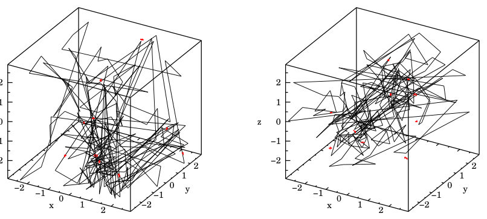
<figcaption class="paper-figure-caption"><b>Fig 1.</b> FIG. 1. Snapshots of the simulation of a binary mixture with N = 20, x1 = 1/2, µ1 = 1, µ2 = 1000, σ = 0.4. The mixture is in a thermodynamic state with a reduced temperature T = T ′/T = 0.1 with T ′ measured in degrees Kelvin and a reduced number density n = n′L 3 = 0.1 with n′ measured in cm−3. In the path integral we chose M = 20 and used either Bose-Einstein (left panel, case A in Table I) or Fermi-Dirac (right panel, case B in Table I) statistics among like particles. Red paths are for the heavy slow species and black paths are for the light fast species.</figcaption>
</figure>
<figure class="paper-figure-card">
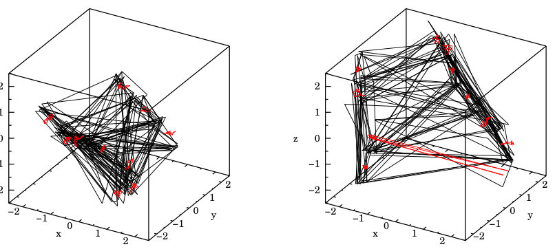
<figcaption class="paper-figure-caption"><b>Fig 2.</b> FIG. 2. Snapshots of the simulation of a binary mixture with N = 20, x1 = 1/2, µ1 = 1, µ2 = 1836.15, σ = 1. The mixture is in a thermodynamic state with a reduced temperature T = T ′/T = 0.005 with T ′ measured in degrees Kelvin and a reduced number density n = n′L 3 = 0.16 with n′ measured in cm−3. In the path integral we chose M = 20 and used either Bose- Einstein (left panel, case G in Table I) or Fermi-Dirac (right panel, case H in Table I) statistics among like particles. Red paths are for the heavy slow protons and black paths are for the light fast electrons.</figcaption>
</figure>
<figure class="paper-figure-card">
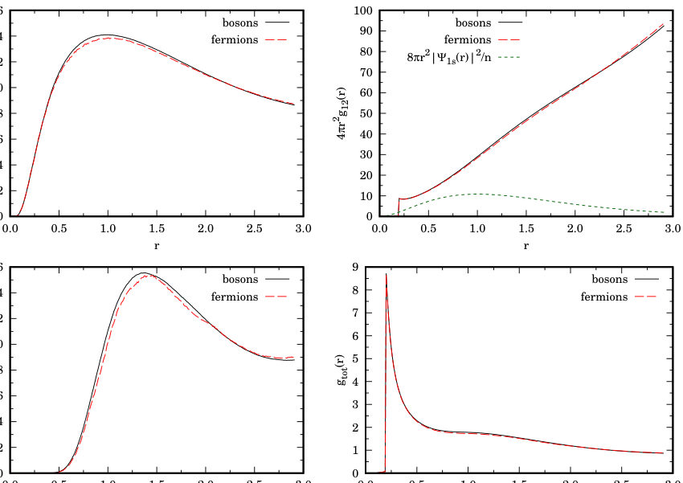
<figcaption class="paper-figure-caption"><b>Fig 3.</b> FIG. 3. The partial, gij, and total, gtot, radial distribution functions for a binary mixture with N = 20, x1 = 1/2, µ1 = 1, µ2 = 1000, σ = 0.4. In the panel for the unlike radial distribution function we also show the ground state probability distribution of the Hydrogen atom for comparison. The mixture is in a thermodynamic state with a reduced temperature T = T ′/T = 0.1 with T ′ measured in degrees Kelvin and a reduced number density n = n′L 3 = 0.1 with n′ measured in cm−3. In the path integral we chose M = 20 and used either Bose-Einstein (case A in Table I) or Fermi-Dirac (case B in Table I) statistics among like particles. In the figures r = r′/L where r′ is measured in centimeters.</figcaption>
</figure>
<figure class="paper-figure-card">
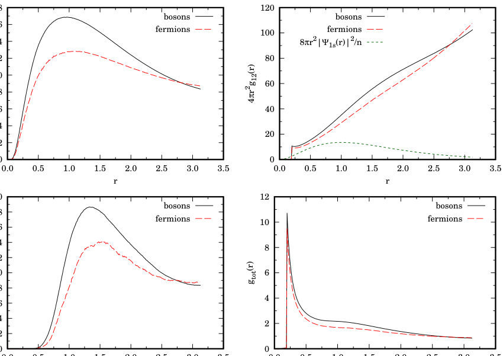
<figcaption class="paper-figure-caption"><b>Fig 4.</b> FIG. 4. The partial, gij, and total, gtot, radial distribution functions for a binary mixture with N = 20, x1 = 1/2, µ1 = 1, µ2 = 1836.15, σ = 0.4. In the panel for the unlike radial distribution function we also show the ground state probability distribution of the Hydrogen atom for comparison. The mixture is in a thermodynamic state with a reduced temperature T = T ′/T = 0.1 with T ′ measured in degrees Kelvin and a reduced number density n = n′L 3 = 0.08 with n′ measured in cm−3. In the path integral we chose M = 20 and used either Bose-Einstein (case C in Table I) or Fermi-Dirac (case D in Table I) statistics among like particles. In the figures r = r′/L where r′ is measured in...</figcaption>
</figure>
<figure class="paper-figure-card">
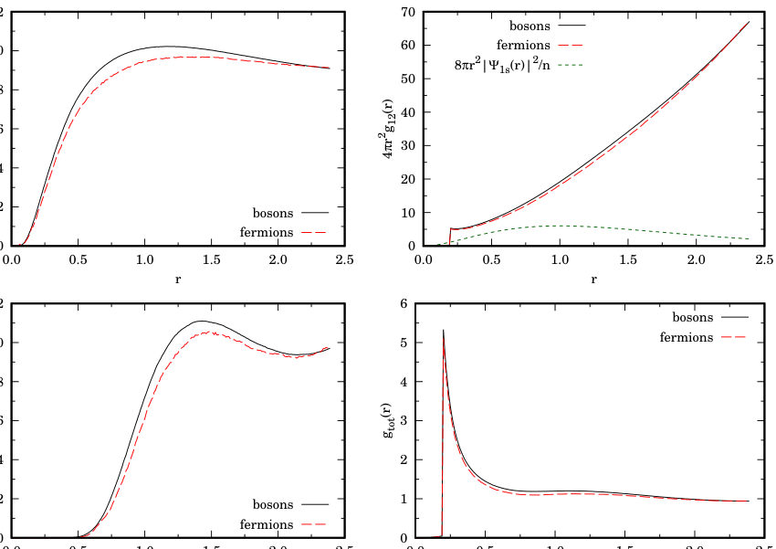
<figcaption class="paper-figure-caption"><b>Fig 5.</b> FIG. 5. The partial, gij, and total, gtot, radial distribution functions for a binary mixture with N = 20, x1 = 1/2, µ1 = 1, µ2 = 1836.15, σ = 0.4. In the panel for the unlike radial distribution function we also show the ground state probability distribution of the Hydrogen atom for comparison. The mixture is in a thermodynamic state with a reduced temperature T = T ′/T = 0.1 with T ′ measured in degrees Kelvin and a reduced number density n = n′L 3 = 0.18 with n′ measured in cm−3. In the path integral we chose M = 20 and used either Bose-Einstein (case E in Table I) or Fermi-Dirac (case F in Table I) statistics among like particles. In the figures r = r′/L where r′ is measured in...</figcaption>
</figure>
</div>

<p><strong>Summary.</strong> This work uses Path Integral Monte Carlo simulations to study electron-proton plasma, aiming to predict the formation of molecular hydrogen. By analyzing structural correlations, the authors demonstrate that quantum statistical effects predict a phase transition from a metallic to a molecular hydrogen state upon cooling. This research is significant for understanding quantum matter under extreme conditions.</p>
<p><strong>Why it may be interesting.</strong> The study uses advanced quantum statistical methods (PIMC) to model complex, strongly interacting quantum matter, providing insights into quantum phase transitions and molecular binding in extreme environments.</p>
<details>
<summary>Detailed structure</summary>
<p><strong>Main problem.</strong> To investigate the quantum statistical prediction of molecular hydrogen formation within a plasma composed of electrons and protons from first principles.</p>
<p><strong>Main result.</strong> The simulations predict a phase transition sequence from metallic to molecular hydrogen as temperature decreases, and the structure analysis confirms the formation of $   ext{H}_2$ molecules.</p>
<p><strong>Method.</strong> Path Integral Monte Carlo (PIMC) simulations are used to calculate thermodynamic and structural properties of the plasma.</p>
<p><strong>Model / system.</strong> The system is a quantum two-component plasma (electron-proton plasma) modeled by a Hamiltonian including Coulomb interactions and a hard core for stabilization.</p>
<p><strong>Key observables.</strong> Thermodynamic properties, structural properties, radial distribution functions ($g_{ij}(r)$), and superfluid fractions.</p>
<p><strong>Important parameters / regimes.</strong> Reduced temperature ($T$), reduced number density ($n$), and the comparison between Bose-Einstein and Fermi-Dirac statistics.</p>
<p><strong>Assumptions / limitations.</strong> The use of Restricted PIMC (RPIMC) for fermions due to the sign problem, and the necessity of an artificial hard core ($\sigma$) in the primitive approximation.</p>
<p><strong>Figures summary.</strong> Figures show radial distribution functions ($g_{ij}(r)$) demonstrating the development of distinct peaks corresponding to $    ext{H}_2$ and $ ext{H}_3$ molecular clusters at low temperatures.</p>
<p><strong>Paper structure.</strong> The paper analyzes the system by comparing additive and nonadditive mixture models, studying the evolution of structural correlations (RDFs) across different temperatures and quantum statistics.</p>
</details>
<details>
<summary>Abstract</summary>
<p>We performed numerical (restricted) path integral Monte Carlo experiments on metallic Hydrogen from first principles. We study a quantum two component plasma where one component is made of pointwise particles of negative unitary charge and the other is made of charged hard spheres of positive unitary charge. We study both the additive mixture and a nonadditive mixture where we only keep a hard core between unlike species. We specialize to the case of the electron-proton plasma with a 1:1 ratios between the molar fraction of the two species. We measured thermodynamic and structural properties of the plasma. From an analysis of the structure we see a transition from a metallic Hydrogen phase, to a molecular Hydrogen phase as the temperature is lowered. As expected at high density the correlations are diminished.</p>
</details>
<p><sub><a href="#top">↑ back to top</a></sub></p>

<p><a id="paper-2606.05032"></a></p>
<h3 id="gaussian-mean-width-strong-converse-bound-on-the-classical-identification-capacity-of-quantum-channels"><a href="http://arxiv.org/abs/2606.05032v1">Gaussian mean width strong converse bound on the classical identification capacity of quantum channels</a></h3>
<p><strong>Authors:</strong> Satvik Singh<br>
<strong>Type:</strong> theory · <strong>Category:</strong> quantum information and computing · <strong>PDF:</strong> <a href="https://arxiv.org/pdf/2606.05032v1">https://arxiv.org/pdf/2606.05032v1</a><br>
<strong>Analysis basis:</strong> full PDF text, analyzed in chunks
<strong>Topic relevance:</strong> <code>entanglement &amp; information structure</code> <strong>1/5</strong></p>
<div class="figure-strip-hint">↔ Scroll figures horizontally</div>
<div class="paper-figures-scroll">
<figure class="paper-figure-card">
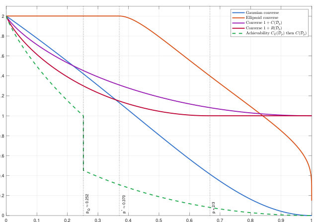
<figcaption class="paper-figure-caption"><b>Fig 1.</b> Figure 1: Strong converse and achievability bounds on the classical identification capacity of the qubit de- polarizing channel Dp (see Eq. (4.18)). The blue curve shows the Gaussian converse bound from Theorem 1.2 (see Eq.(4.21)). The orange curve shows the Ellipsoid converse bound from [38] (see Eq. (4.23)). The purple and red curves show the classical capacity [38] and quantum capacity [5] converse bounds (see Eqs. (4.24) and (4.26)), respectively. The dashed curve shows the achievability bound from [15, 36] (see Eq. (4.32)).</figcaption>
</figure>
<figure class="paper-figure-card">
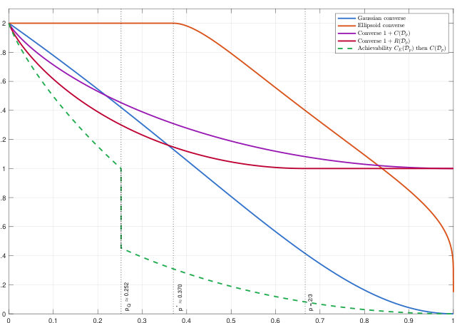
<figcaption class="paper-figure-caption"><b>Fig 2.</b> Figure 2: Strong converse and achievability bounds on the classical identification capacity of the qubit depolarizing channel Dp. The blue and orange curves show the Gaussian and Ellipsoid strong converse bounds from Eqs. (4.21) and (4.23), respectively. The purple and red curves show the classical capacity and quantum capacity strong converse bounds from Eqs. (4.24) and (4.26), respectively. The dashed curve shows the achievability bound from Eq. (4.32).</figcaption>
</figure>
<figure class="paper-figure-card">
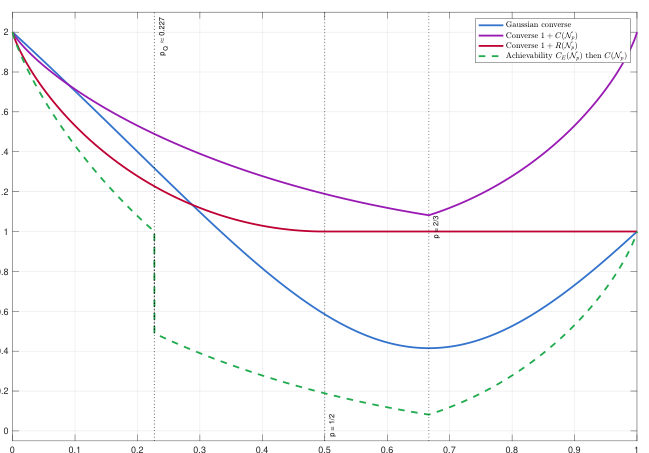
<figcaption class="paper-figure-caption"><b>Fig 3.</b> Figure 3: Strong converse and achievability bounds on the classical identification capacity of the qubit Pauli XY channel Np. The blue curve shows the Gaussian strong converse bound from Eq. (4.36). The purple and red curves show the capacity converse bounds from Eqs. (4.37) and (4.38). The dashed curve shows the achievability bound from Eq. (4.44).</figcaption>
</figure>
<figure class="paper-figure-card">
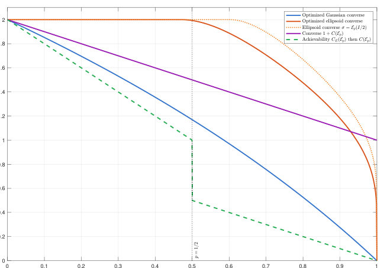
<figcaption class="paper-figure-caption"><b>Fig 4.</b> Figure 4: Strong converse and achievability bounds on the classical identification capacity of the qubit erasure channel Ep. The solid blue and orange curves show the Gaussian and ellipsoid strong converse bounds from Eqs. (4.59) and (4.61), respectively. The dashed orange curve is the ellipsoid bound with σ = Ep(1/2) (Eq. (4.62)). The purple curve shows the capacity converse bound from Eq. (4.63). The green dashed curve shows the achievability bound from Eq. (4.65).</figcaption>
</figure>
<figure class="paper-figure-card">
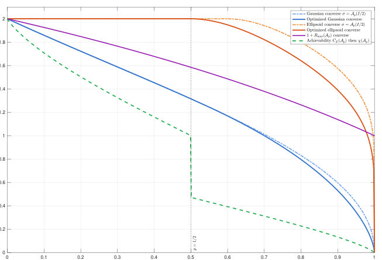
<figcaption class="paper-figure-caption"><b>Fig 5.</b> Figure 5: Strong converse and achievability bounds on the classical identification capacity of the qubit amplitude damping channel Ap. The solid blue and orange curves show the optimized Gaussian and Ellipsoid converse bounds from Eqs. (4.76) and (4.79), respectively. The dashed blue and orange curves show the σ = Ap(1/2) Gaussian and Ellipsoid converse bounds from Eqs. (4.77) and (4.80), respectively. The purple curve shows the capacity converse bound from Eq. (4.81). The green dashed curve shows the achievability bound from Eq. (4.84).</figcaption>
</figure>
</div>

<p><strong>Summary.</strong> This paper develops a strong converse bound for the classical identification capacity of quantum channels by utilizing the Gaussian mean width of the channel's output space. The core technique involves relating the metric complexity of the channel image to the operator norm of a specially constructed singular operator. This yields improved, general bounds for several important quantum channels.</p>
<p><strong>Why it may be interesting.</strong> It provides a powerful, geometrically motivated tool (Gaussian mean width) to derive fundamental limits (converse bounds) on quantum information tasks, which is crucial for understanding the ultimate performance limits of quantum communication protocols.</p>
<details>
<summary>Detailed structure</summary>
<p><strong>Main problem.</strong> The paper aims to establish a single-letter and efficiently computable strong converse bound on the classical identification capacity of quantum channels.</p>
<p><strong>Main result.</strong> The identification capacity is bounded by the infimum over all reference states $\sigma$ of the logarithm of the operator norm of a derived singular operator, $\inf_{\sigma} \log \|Q_{N, \sigma}\|_\infty$.</p>
<p><strong>Method.</strong> The method connects the metric complexity of the channel output space, quantified by the Gaussian mean width, to the identification capacity using Sudakov's inequality.</p>
<p><strong>Model / system.</strong> The analysis concerns general quantum channels $N: \mathcal{L}(A) 	o \mathcal{L}(B)$ acting on finite-dimensional Hilbert spaces, relating to quantum information transmission tasks.</p>
<p><strong>Key observables.</strong> Classical identification capacity ($   ext{CID}(N)$), Gaussian mean width ($w_G$), and the $\sigma$-weighted singular operator ($Q_{N, \sigma}$).</p>
<p><strong>Important parameters / regimes.</strong> The noise/depolarizing/erasure probability parameter ($p$) is used when analyzing specific examples like the depolarizing or erasure channels.</p>
<p><strong>Assumptions / limitations.</strong> The analysis is restricted to finite-dimensional Hilbert spaces, and the method relies on relating code size bounds to Gaussian covering estimates.</p>
<p><strong>Figures summary.</strong> Figures compare the derived strong converse bounds (Gaussian, Ellipsoid) against known achievability bounds for specific channels like the depolarizing ($D_p$), Pauli ($N_p$), and erasure ($E_p$) channels.</p>
<p><strong>Paper structure.</strong> The paper develops the theory by first defining weighted Euclidean geometries and relating code size to Gaussian width. It then derives the strong converse bound using the Gaussian mean width, culminating in the final optimization over reference states $\sigma$ which admits an SDP formulation.</p>
</details>
<details>
<summary>Abstract</summary>
<p>We establish a single-letter and efficiently computable strong converse bound on the classical identification capacity of quantum channels. By equipping the $n$-fold channel output space with a product state-weighted $σ$-Euclidean geometry, we allow trace-distance separation constraints for identification codes to be controlled by Euclidean covering estimates. Using Sudakov's inequality, we bound the covering numbers of the $n$-fold channel outputs via their Gaussian mean widths in the weighted geometry, whose exponential growth in $n$ is governed by the operator norm of a single-letter positive operator. Upon optimizing over all weighing states $σ$, this yields a strong converse bound on the identification capacity of the channel, which also admits a semidefinite representation. Our method improves the best known converse bounds on the identification capacity of several important examples, such as depolarizing, Pauli, erasure, and amplitude damping channels. We also discuss extensions of this method to more general Euclidean geometries on the output space.</p>
</details>
<p><sub><a href="#top">↑ back to top</a></sub></p>

<p><a id="paper-2606.04679"></a></p>
<h3 id="hybrid-quantum-classical-physics-informed-neural-networks-for-solving-nonlinear-pdes-when-and-where-hybridization-is-effective"><a href="http://arxiv.org/abs/2606.04679v1">Hybrid quantum-classical physics-informed neural networks for solving nonlinear PDEs: when and where hybridization is effective?</a></h3>
<p><strong>Authors:</strong> Kaveh Zabihi, Hamid Montazeri, Akke S. J. Suiker<br>
<strong>Type:</strong> both · <strong>Category:</strong> numerical methods · <strong>PDF:</strong> <a href="https://arxiv.org/pdf/2606.04679v1">https://arxiv.org/pdf/2606.04679v1</a><br>
<strong>Analysis basis:</strong> full PDF text, analyzed in chunks
<strong>Topic relevance:</strong> <code>methods for driven-dissipative</code> <strong>1/5</strong></p>
<div class="figure-strip-hint">↔ Scroll figures horizontally</div>
<div class="paper-figures-scroll">
<figure class="paper-figure-card">
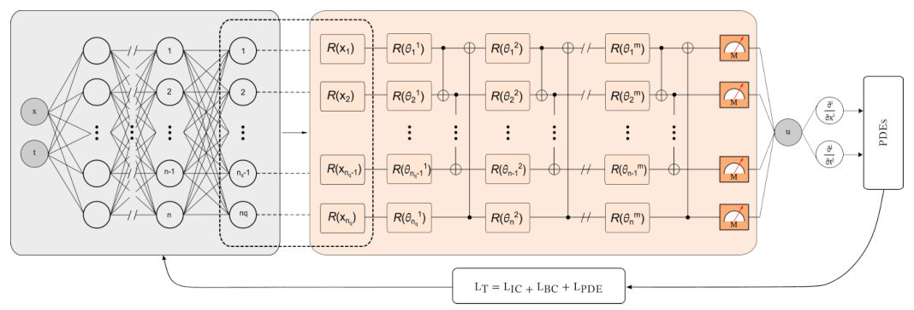
<figcaption class="paper-figure-caption"><b>Fig 1.</b> Fig. 1 Schematic of the proposed hybrid quantum-classical physics-informed neural network (HQPINN) architecture. The spatiotemporal input (𝑥, t) is first processed by a classical feed-forward neural network (depicted in gray) to produce a compact latent representation, which is then encoded into an 𝑛!-qubit parameterized quantum circuit (PQC) using angle embedding, followed by 𝑚 variational layers composed of single-qubit rotations and a ring CNOT entangling gates (depicted in orange). Pauli-Z expectation values measured from the PQC are subsequently mapped through a final classical dense layer to generate the scalar network prediction 𝑢(𝑥, 𝑦). Automatic differentiation is used to compute...</figcaption>
</figure>
<figure class="paper-figure-card">
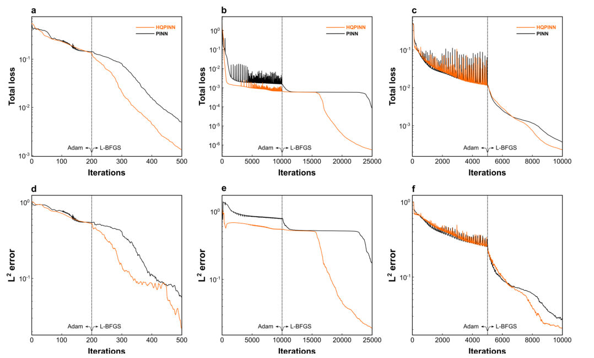
<figcaption class="paper-figure-caption"><b>Fig 2.</b> Fig. 2 Training dynamics of the HQPINN (orange) and the classical PINN (black) for three benchmark PDEs. Total loss during training for (a) Burgers’ equation, (b) Allen–Cahn equation, and (c) KdV equation. (d-f) The corresponding relative L2 error with respect to the reference solution. Dashed vertical lines mark the transition from Adam to L-BFGS-B. Training is carried out for 500, 25,000, and 10,000 iterations for Burgers’, Allen–Cahn, and KdV equations, respectively.</figcaption>
</figure>
<figure class="paper-figure-card">
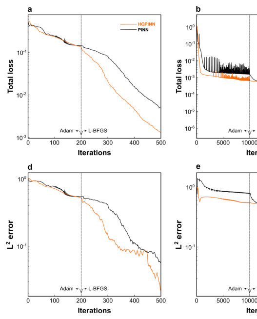
<figcaption class="paper-figure-caption"><b>Fig 3.</b> Fig. 3 presents the spatial–temporal distribution of the prediction error for the classical PINN and the HQPINN across the three benchmark PDEs. These contour maps complement the global metrics in Fig. 2 by showing where errors are concentrated within the computational domain and how effectively the HQPINN suppresses localized error structures. For Burgers’ equation (Fig. 3a,d), the dominant errors in the classical PINN are concentrated near the steep transition region where the solution develops a sharp convective gradient. This appears as a pronounced error band</figcaption>
</figure>
<figure class="paper-figure-card">
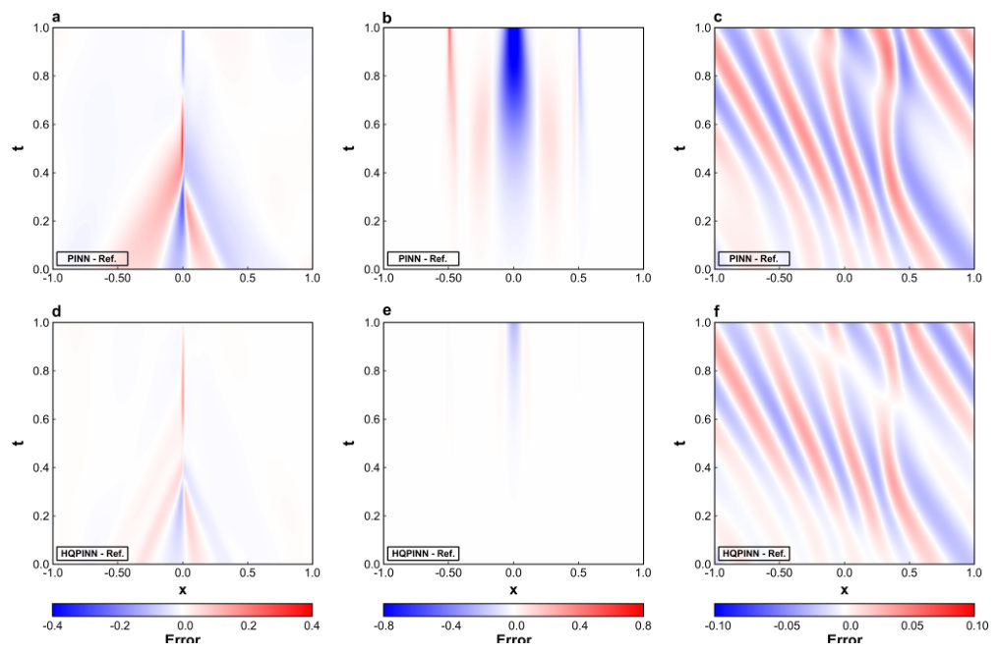
<figcaption class="paper-figure-caption"><b>Fig 4.</b> Fig. 3 Spatial–temporal error fields of the classical PINN for (a) Burgers’ equation, (b) Allen–Cahn equation, and (c) KdV equation. (d)–(f) The corresponding error fields of the HQPINN. The plotted quantity is the signed prediction error, defined as the difference between the predicted and reference solutions. For Burgers’ and Allen–Cahn equations, the HQPINN substantially reduces both the magnitude and the spatial extent of the dominant localized error regions. For the KdV equation, both models exhibit oscillatory error patterns aligned with the dispersive wave structure, although the HQPINN yields a more modest reduction in error amplitude.</figcaption>
</figure>
<figure class="paper-figure-card">
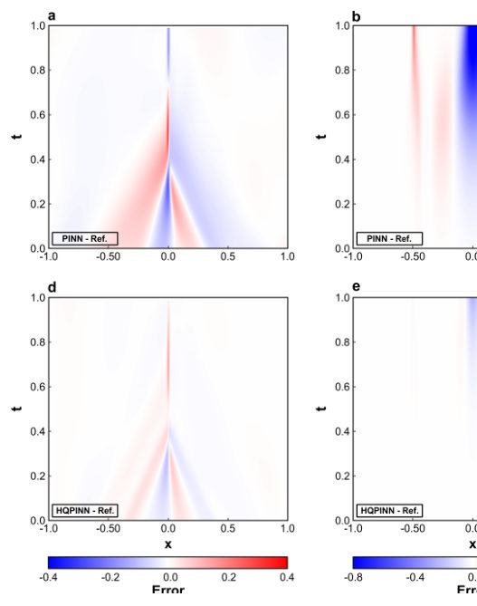
<figcaption class="paper-figure-caption"><b>Fig 5.</b> Fig. 4 compares representative solution snapshots of the classical PINN and the HQPINN against the reference solution for the three benchmark PDEs. These profiles complement the spatial-temporal error maps in Fig. 3 by illustrating how accurately each model reproduces key spatial features of the solution at different times. For Burgers’ equation, both models closely match the reference solution at early times when the solution remains smooth. As the steep convective gradient forms, the classical PINN begins to deviate in the vicinity of the shock region, whereas the HQPINN remains closely aligned with the reference solution. This behavior reflects improved local resolution of</figcaption>
</figure>
</div>

<p><strong>Summary.</strong> This work introduces the Hybrid Quantum-Classical PINN (HQPINN) to overcome the limitations of classical PINNs when solving challenging nonlinear PDEs. By embedding a Parameterized Quantum Circuit into the network structure, the model achieves superior accuracy and training stability, particularly for problems involving shocks or stiff interfaces. The findings provide a systematic guide on how quantum resources can be effectively co-designed with classical ML components for advanced scientific computing.</p>
<p><strong>Why it may be interesting.</strong> The integration of quantum circuits into solving continuous physical systems like PDEs offers a novel computational paradigm for modeling complex, non-linear dynamics that challenge classical numerical solvers.</p>
<details>
<summary>Detailed structure</summary>
<p><strong>Main problem.</strong> Classical Physics-Informed Neural Networks (PINNs) struggle to accurately solve nonlinear Partial Differential Equations (PDEs) exhibiting sharp gradients, stiffness, or multiscale structure.</p>
<p><strong>Main result.</strong> The proposed Hybrid Quantum-Classical PINN (HQPINN) significantly improves accuracy and stabilizes training compared to classical PINNs, especially for stiff and shock-dominated PDEs.</p>
<p><strong>Method.</strong> The HQPINN integrates a classical neural network backbone with a Parameterized Quantum Circuit (PQC) trained jointly using a physics-informed loss function.</p>
<p><strong>Model / system.</strong> The model is benchmarked on three 1D nonlinear PDEs: Burgers' equation (shocks), the Allen-Cahn equation (stiff interfaces), and the Korteweg-de Vries (KdV) equation (dispersive).</p>
<p><strong>Key observables.</strong> Relative L2 error, training loss dynamics, and the stability of the solution across different PDE regimes.</p>
<p><strong>Important parameters / regimes.</strong> Qubit count, circuit depth, PQC placement, collocation density, and classical network width are systematically varied.</p>
<p><strong>Assumptions / limitations.</strong> All experiments are performed using classical quantum-circuit simulators, ignoring hardware noise effects.</p>
<p><strong>Figures summary.</strong> Figures illustrate the comparison of training dynamics and final L2 errors across the three PDEs, showing HQPINN's superior performance in challenging regimes.</p>
<p><strong>Paper structure.</strong> The paper introduces the HQPINN architecture, benchmarks it against classical PINNs on three canonical nonlinear PDEs, performs a systematic sensitivity analysis across quantum and classical hyperparameters, and concludes with design guidelines for quantum-enhanced solvers.</p>
</details>
<details>
<summary>Abstract</summary>
<p>Physics-informed neural networks (PINNs) often struggle on nonlinear partial differential equations (PDEs) with sharp gradients, stiff dynamics, high-frequency content, or multiscale structure. Such limitations, rooted in spectral bias, ill-conditioned optimization, and unstable convergence, restrict PINN accuracy in regimes where advanced solvers are most needed. In this work, we develop a hybrid quantum-classical physics-informed neural network (HQPINN) that integrates a classical neural-network backbone with a parameterized quantum circuit (PQC) to enrich the solution representation. The framework is benchmarked against a classical PINN on three representative nonlinear PDEs: Burgers' equation, the Allen-Cahn equation, and the Korteweg-de Vries (KdV) equation. The framework is further examined through a systematic sensitivity analysis of qubit count, circuit depth, PQC placement, collocation density, and classical-network width. Across all benchmarks, HQPINNs exhibit smoother training dynamics, reduced loss oscillations, and improved final accuracy, with the largest gains occurring in stiff and multiscale regimes. Relative L2 error decreases by about fourfold for Burgers' equation and fivefold for the Allen-Cahn equation, while improvements for the KdV equation are more moderate. Overall, the results demonstrate that carefully co-designed hybrid quantum-classical architectures can mitigate key limitations of classical PINNs and provide practical design guidance for near-term quantum-enhanced PDE solvers.</p>
</details>
<p><sub><a href="#top">↑ back to top</a></sub></p>

<p><a id="paper-2606.05097"></a></p>
<h3 id="no-go-theorem-for-gaussian-quantum-repeaters-from-fractional-extendibility"><a href="http://arxiv.org/abs/2606.05097v1">No-Go Theorem for Gaussian Quantum Repeaters from Fractional Extendibility</a></h3>
<p><strong>Authors:</strong> Rabsan Galib Ahmed, Graeme Smith<br>
<strong>Type:</strong> theory · <strong>Category:</strong> quantum information and computing · <strong>PDF:</strong> <a href="https://arxiv.org/pdf/2606.05097v1">https://arxiv.org/pdf/2606.05097v1</a><br>
<strong>Analysis basis:</strong> full PDF text, analyzed in chunks
<strong>Topic relevance:</strong> <code>entanglement &amp; information structure</code> <strong>1/5</strong></p>
<div class="figure-strip-hint">↔ Scroll figures horizontally</div>
<div class="paper-figures-scroll">
<figure class="paper-figure-card">
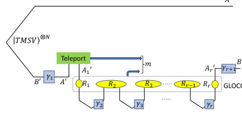
<figcaption class="paper-figure-caption"><b>Fig 1.</b> FIG. 1. Choi state of the repeater chain, Rη corresponding to some message string m. γi’s denote attenuation parameters of the intermediate pure loss channels.</figcaption>
</figure>
<figure class="paper-figure-card">

<figcaption class="paper-figure-caption"><b>Fig 2.</b> FIG. 2. Each repeater node prepares a bipartite state locally and shares one part to the next node using the attenuation channel (illustrated for three nodes). Thereafter they perform an arbitrary GLOCC protocol.</figcaption>
</figure>
</div>

<p><strong>Summary.</strong> This paper establishes a no-go theorem proving that quantum repeaters using only Gaussian operations cannot improve the quantum capacity of a pure-loss optical channel beyond what direct transmission achieves. The authors achieve this by introducing and analyzing the mathematical concept of fractional extendibility for Gaussian states. This result places fundamental theoretical limits on the achievable rates in practical quantum communication networks.</p>
<p><strong>Why it may be interesting.</strong> This work provides a rigorous mathematical boundary on the performance of quantum communication protocols when restricted to experimentally feasible Gaussian operations, which is highly relevant for quantum optics and quantum networking.</p>
<details>
<summary>Detailed structure</summary>
<p><strong>Main problem.</strong> To prove a no-go theorem demonstrating that Gaussian quantum repeaters cannot enhance the quantum communication rate over a pure-loss bosonic attenuation channel.</p>
<p><strong>Main result.</strong> The quantum capacity achieved by any repeater chain composed solely of Gaussian operations is upper-bounded by the quantum capacity achievable through direct transmission.</p>
<p><strong>Method.</strong> The proof introduces and utilizes the concept of fractional extendibility for Gaussian states, applying it within the framework of Gaussian quantum information theory.</p>
<p><strong>Model / system.</strong> The model involves quantum communication over optical channels limited by photon loss, analyzed using Gaussian states characterized by their first moment and Quantum Covariance Matrix (QCM).</p>
<p><strong>Key observables.</strong> Quantum capacity $Q(A_\eta)$, the QCM of the output state ($V'_{A'}$), and the transmissivity $\eta$.</p>
<p><strong>Important parameters / regimes.</strong> Transmissivity $\eta \in [0, 1]$, and the attenuation parameters $\gamma_i$ characterizing intermediate loss.</p>
<p><strong>Assumptions / limitations.</strong> The theorem is strictly limited to repeater chains restricted to performing only Gaussian operations (including homodyne measurements) and classical communication.</p>
<p><strong>Figures summary.</strong> Figure 1 illustrates the Choi state of the repeater chain, showing the process involving intermediate attenuation channels and local operations. Figure 2 details how a bipartite state is prepared across three nodes using attenuation channels.</p>
<p><strong>Paper structure.</strong> The work develops the mathematical framework by generalizing $k$-extendibility to fractional extendibility, proving key lemmas regarding its composition and monotonicity, and finally applying these tools to bound the quantum capacity of the full repeater chain $R_\eta$.</p>
</details>
<details>
<summary>Abstract</summary>
<p>Photon loss in optical channels fundamentally limits long-range reliable quantum communication. A standard approach to overcoming this limitation is the use of quantum repeater nodes, which typically perform experimentally demanding non-Gaussian operations. However, whether Gaussian repeater protocols can enhance quantum communication rates over bosonic attenuation channels has remained open. In this work, we prove a no-go theorem for Gaussian quantum repeaters in a quantum network. Specifically, we show that any repeater chain composed of Gaussian operations, homodyne measurements, and arbitrary classical communication cannot enhance the quantum capacity of a pure-loss attenuation channel beyond that achievable by direct transmission. Our proof introduces a generalisation of $k$-extendibility to a notion of fractional extendibility for Gaussian states and establishes some of its useful properties, thereby providing a powerful framework for analysing Gaussian quantum networks.</p>
</details>
<p><sub><a href="#top">↑ back to top</a></sub></p>

<p><a id="paper-2606.04714"></a></p>
<h3 id="why-fe-doping-kills-photoluminescence-in-cspbclmath665math-but-not-in-cspbbrmath666math-role-of-midgap-fe-3math667math-states-and-electron-phonon-coupling"><a href="http://arxiv.org/abs/2606.04714v1">Why Fe doping kills photoluminescence in CsPbCl$_3$ but not in CsPbBr$_3$: Role of midgap Fe 3$d$ states and electron-phonon coupling</a></h3>
<p><strong>Authors:</strong> Arpan Das, Saptarshi Chakraborty<br>
<strong>Type:</strong> theory · <strong>Category:</strong> other · <strong>PDF:</strong> <a href="https://arxiv.org/pdf/2606.04714v1">https://arxiv.org/pdf/2606.04714v1</a><br>
<strong>Analysis basis:</strong> full PDF text, analyzed in chunks
<strong>Topic relevance:</strong> <code>correlated / nonlocal dissipation</code> <strong>1/5</strong></p>
<div class="figure-strip-hint">↔ Scroll figures horizontally</div>
<div class="paper-figures-scroll">
<figure class="paper-figure-card">

<figcaption class="paper-figure-caption"><b>Fig 1.</b> FIG. 1. Systems considered in the present DFT calculations: (a) 12.5% Fe-doped CsPbCl3 and (b) 25% Fe-doped CsPbCl3. The structures are constructed using a 2 × 2 × 2 supercell comprising 8 Cs, 7 (6) Pb, 1 (2) Fe, and 24 Cl atoms for 12.5% (25%) Fe concentrations. For the 25% Fe-doped case, only the lowest-energy configuration is shown, in which the two Fe atoms occupy sites along a face diagonal. Color code: Cs (cyan), Pb (gray), Cl (green), and Fe (red).</figcaption>
</figure>
<figure class="paper-figure-card">

<figcaption class="paper-figure-caption"><b>Fig 2.</b> FIG. 3. Orbital-projected band structures without SOC for (a) 12.5% Fe-doped CsPbCl3 (spin-up), (b) 12.5% Fe-doped CsPbCl3 (spin-down), (c) 25% Fe-doped CsPbCl3 (spin-up), and (d) 25% Fe-doped CsPbCl3 (spin-down). The bands are projected onto the three dominant orbitals near the Fermi level: Fe 3d (red), Cl 3p (blue), and Pb 6p (green). The color triangle shown in the inset of panel (d) illustrates the relative orbital contributions, with intermediate colors indicating the degree of orbital mixing (hybridization).</figcaption>
</figure>
<figure class="paper-figure-card">

<figcaption class="paper-figure-caption"><b>Fig 3.</b> FIG. 2. PDOS of pristine CsPbCl3: (a) without SOC and (c) with SOC. Spin-resolved PDOS without SOC for (b) 12.5% and (d) 25% Fe-doped CsPbCl3. The electronic states near the Fermi level are dominated by Fe 3d, Cl 3p, and Pb 6p orbitals.</figcaption>
</figure>
<figure class="paper-figure-card">

<figcaption class="paper-figure-caption"><b>Fig 4.</b> FIG. 5. Phonon dispersion (shown in the frequency range of Fe vibrations) with atomic contributions, calculated with- out SOC for (a) 12.5% Fe-doped CsPbBr3 and (b) 12.5% Fe- doped CsPbCl3. The phonon branches are colored according to the relative weights of atomic contributions. The color triangle shown in the inset indicates Fe (red), Br/Cl (blue), and Pb (green), with intermediate colors representing the de- gree of atomic mixing (hybridization). Phonon density of states (PDOS), also referred to as vibrational density of states (VDOS) (shown in the frequency range of Fe vibrations), with atomic contributions, calculated without SOC for (c) 12.5% Fe-doped CsPbBr3 and (d) 12.5% Fe-doped...</figcaption>
</figure>
<figure class="paper-figure-card">

<figcaption class="paper-figure-caption"><b>Fig 5.</b> FIG. 4. Experimentally measured variation of the integrated PL intensity (area under the emission curve) as a function of Fe concentration for Fe-doped CsPbCl3 (red filled circles) and Fe-doped CsPbBr3 (blue filled squares). The values are normalized with respect to the corresponding pristine systems (0% Fe doping). The blue and red curves serve as guides to the eye.</figcaption>
</figure>
</div>

<p><strong>Summary.</strong> This theoretical study investigates why Fe doping causes complete PL quenching in $    ext{CsPbCl}_3$ but only partial quenching in $  ext{CsPbBr}_3$. By calculating electron-phonon coupling, the authors show that the difference lies in the coupling strength, which is much higher in the chloride system due to its lattice vibrations. This establishes EPC as the key factor controlling dopant-induced nonradiative decay in these perovskites.</p>
<p><strong>Why it may be interesting.</strong> This work provides a clear example of how lattice dynamics (phonons) can dominate the quenching of quantum optical signals, offering a mechanism beyond simple electronic trapping for understanding energy dissipation in solid-state emitters.</p>
<details>
<summary>Detailed structure</summary>
<p><strong>Main problem.</strong> The study aims to determine the microscopic reason for the differing photoluminescence (PL) quenching behaviors observed when Fe is doped into $  ext{CsPbCl}_3$ versus $ ext{CsPbBr}_3$ perovskites.</p>
<p><strong>Main result.</strong> The distinct PL responses are governed not by the electronic structure alone, but by the significantly stronger electron-phonon coupling (EPC) in the chloride system, which efficiently dissipates excitation energy into lattice vibrations.</p>
<p><strong>Method.</strong> The research employs spin-polarized DFT calculations, followed by phonon calculations and the evaluation of electron-phonon coupling strength using the deformation potential approach.</p>
<p><strong>Model / system.</strong> The system under study is the halide perovskite $   ext{CsPbX}_3$ ($    ext{X} =    ext{Cl},    ext{Br}$) doped with Iron ($  ext{Fe}$). The analysis compares the electronic and vibrational properties of $ ext{Fe}$-doped $    ext{CsPbCl}_3$ and $    ext{Fe}$-doped $    ext{CsPbBr}_3$.</p>
<p><strong>Key observables.</strong> PL intensity (quenching extent), midgap $  ext{Fe } 3d$ states, deformation potential ($D$), and the electron-phonon coupling strength ($|M|^2$).</p>
<p><strong>Important parameters / regimes.</strong> The ratio of EPC strengths ($|M|^2$) between the two halides ($ ext{Cl}$ vs. $  ext{Br}$), and the lattice vibrational frequencies.</p>
<p><strong>Assumptions / limitations.</strong> The analysis assumes that the difference in PL quenching is due to the coupling mechanism, moving beyond purely electronic descriptions.</p>
<p><strong>Figures summary.</strong> Figures illustrate structural changes, electronic band structures under strain, and phonon dispersion curves comparing the two doped perovskites.</p>
<p><strong>Paper structure.</strong> The paper first establishes that $ ext{Fe}$ doping introduces midgap states causing quenching. It then compares the electronic structures of $ ext{CsPbCl}_3$ and $    ext{CsPbBr}_3$, noting electronic similarity. The core argument is built by calculating the electron-phonon coupling, revealing a large disparity in EPC strength between the two materials, which explains the differing PL outcomes.</p>
</details>
<details>
<summary>Abstract</summary>
<p>Understanding the impact of transition-metal doping on the optoelectronic properties of halide perovskite nanocrystals is essential for their rational design in photonic applications. We establish the microscopic origin of photoluminescence (PL) quenching in Fe-doped CsPbCl$_3$ using spin-polarized density functional theory calculations. The emergence of Fe 3$d$ midgap states creates efficient electron-trapping centres that drive nonradiative recombination, accounting for the reduced PL intensity. Extending this analysis to Fe-doped CsPbX$_3$ (X = Cl, Br), we show experimentally that although PL intensity is suppressed in both systems relative to their pristine counterparts, their high-doping behaviour diverges: CsPbCl$_3$ becomes completely non-emissive, whereas CsPbBr$_3$ retains a finite, saturated PL intensity. Despite this contrast, electronic structure calculations reveal nearly identical midgap states in both materials, indicating that electronic effects alone cannot explain the distinct PL responses. Phonon calculations likewise fail to capture this difference. In contrast, electron-phonon coupling calculations based on the deformation potential approach reveal significantly stronger coupling in Fe-doped CsPbCl$_3$, enabling efficient dissipation of electronic excitation energy into lattice vibrations and leading to complete PL quenching. These results identify electron-phonon coupling as the key factor governing halide-dependent PL quenching and provide a unified microscopic framework for dopant-induced nonradiative processes in halide perovskites.</p>
</details>
<p><sub><a href="#top">↑ back to top</a></sub></p>
<h2 id="other-papers-13">Other papers (13)</h2>
<p><em>Papers from primary archives without highlighted authors or any topic match. Click to expand.</em></p>
<details>
<summary>Show other papers</summary>

<p><a id="paper-2606.04559"></a></p>
<h3 id="antiferromagnetic-quantum-criticality-in-infinite-layer-cuprates-sr1-xndxcuo2"><a href="http://arxiv.org/abs/2606.04559v1">Antiferromagnetic Quantum Criticality in Infinite-Layer Cuprates Sr1-xNdxCuO2</a></h3>
<p><strong>Authors:</strong> Bin-Jie Wu, Ze-Xian Deng, Guang-Ran Wei, Xi Zhou, Ji-Hai Zhang, Da-Zhuang Deng, Qun Zhu, Yong Zhong, Can-Li Song, Xu-Cun Ma, Qi-Kun Xue<br>
<strong>Type:</strong> both · <strong>Category:</strong> strongly correlated electrons · <strong>PDF:</strong> <a href="https://arxiv.org/pdf/2606.04559v1">https://arxiv.org/pdf/2606.04559v1</a><br>
<strong>Analysis basis:</strong> full PDF text, analyzed in chunks</p>
<div class="figure-strip-hint">↔ Scroll figures horizontally</div>
<div class="paper-figures-scroll">
<figure class="paper-figure-card">

<figcaption class="paper-figure-caption"><b>Fig 1.</b> FIG. 1. (a) 2θ-ω X-ray diffraction scans of SNCO thin films with various Nd content x. (b)</figcaption>
</figure>
<figure class="paper-figure-card">

<figcaption class="paper-figure-caption"><b>Fig 2.</b> FIG. 2. (a) Schematic evolution of the FS in electron-doped cuprates from the underdoped (Phase I)</figcaption>
</figure>
<figure class="paper-figure-card">

<figcaption class="paper-figure-caption"><b>Fig 3.</b> FIG. 3. (a) Temperature dependence of RH for SNCO films with various Nd content x. (b) RH at 10</figcaption>
</figure>
<figure class="paper-figure-card">

<figcaption class="paper-figure-caption"><b>Fig 4.</b> FIG. 4. (a) Temperature dependence of the in-plane resistivity ρxx for the SNCO film with x = 0.145.</figcaption>
</figure>
<figure class="paper-figure-card">

<figcaption class="paper-figure-caption"><b>Fig 5.</b> FIG. 5. Electronic phase diagram of SNCO. The superconducting transition temperatures Tc, onset and</figcaption>
</figure>
</div>
<p><strong>Summary.</strong> This work investigates quantum criticality in electron-doped cuprates using high-quality epitaxial films of $  ext{Sr}_{1-x}   ext{Nd}_x   ext{CuO}_2$. By measuring transport properties, the authors identify a doping-dependent Fermi surface reconstruction driven by antiferromagnetic correlations. The findings establish a clean benchmark for understanding unconventional superconductivity near a quantum critical point.</p>
<p><strong>Why it may be interesting.</strong> The strong focus on unconventional superconductivity, quantum criticality, and correlated electron physics makes this highly relevant to theoretical physicists studying strongly correlated materials and non-Fermi liquid behavior.</p>
<details>
<summary>Detailed structure</summary>
<p><strong>Main problem.</strong> The paper aims to elucidate the phase diagram of high-temperature cuprate superconductors by understanding the interplay between quantum criticality and Fermi surface reconstruction (FSR).</p>
<p><strong>Main result.</strong> The study establishes intrinsic, universal antiferromagnetic quantum criticality in electron-doped cuprates, supported by evidence of FSR and strange metal behavior near the critical doping $x_c$.</p>
<p><strong>Method.</strong> The research combines high-quality epitaxial thin film synthesis (ozone-assisted MBE) with detailed transport measurements (Hall effect, resistivity) and theoretical modeling using a spin-density-wave tight-binding approach.</p>
<p><strong>Model / system.</strong> The physical system is the infinite-layer cuprate $ ext{Sr}_{1-x}   ext{Nd}_x   ext{CuO}_2$. The theoretical model involves a tight-binding Hamiltonian incorporating a doping-dependent SDW gap, allowing for quantitative reproduction of the observed electronic structure evolution.</p>
<p><strong>Key observables.</strong> Hall coefficient ($R_H$) sign change (electron to hole), Fermi surface reconstruction at $x_c \approx 0.155$, and linear-in-temperature/field normal-state resistivity (strange metal behavior).</p>
<p><strong>Important parameters / regimes.</strong> Critical doping $x_c \approx 0.155$, temperature range down to 2 K, and the doping dependence of the SDW gap $\Delta(x)$.</p>
<p><strong>Assumptions / limitations.</strong> The infinite-layer structure is treated as a 'clean benchmark platform' because it minimizes structural instabilities present in other cuprate types.</p>
<p><strong>Figures summary.</strong> Figures show XRD patterns, temperature dependence of resistivity ($
ho_{xx}$), and Hall measurements illustrating the carrier-type transition and the reconstruction of the Fermi surface topology across the doping range.</p>
<p><strong>Paper structure.</strong> The paper systematically presents experimental characterization of high-quality films, followed by detailed analysis of transport properties (Hall and resistivity) across the doping dome, culminating in a theoretical model that links the observed transport anomalies to an antiferromagnetic quantum critical point.</p>
</details>
<details>
<summary>Abstract</summary>
<p>The interplay between quantum criticality and Fermi surface reconstruction is central to elucidating the phase diagram of high-temperature cuprate superconductors. While studies on electron-doped T'-structure cuprates suggest an antiferromagnetic origin of this reconstruction, quantitative consensus has been hindered by apical oxygen instabilities and uncontrolled oxygen vacancies. Here, we overcome these limitations by utilizing ozone-assisted molecular beam epitaxy to synthesize high-quality, oxygen-stoichiometric thin films of infinite-layer cuprate Sr1-xNdxCuO2 across its entire superconducting dome. Hall transport measurements reveal a sharp carrier-type transition signaling a Fermi surface reconstruction at a critical doping xc ~ 0.155. We show that a spin-density-wave tight-binding model quantitatively reproduces the transport evolution, supporting an antiferromagnetic origin of this quantum phase transition. Furthermore, upon suppressing superconductivity with magnetic fields, the normal-state resistivity exhibits a pristine strange metal behavior that persists down to 2 K in the vicinity of xc. Our findings establish an intrinsic, universal antiferromagnetic quantum criticality in electron-doped cuprates, positioning the structurally simplest infinite-layer cuprates as a clean benchmark platform for theories of unconventional superconductivity.</p>
</details>
<p><sub><a href="#top">↑ back to top</a></sub></p>

<p><a id="paper-2606.04085"></a></p>
<h3 id="coarse-graining-from-within-wilson-fisher-universality-on-math683math"><a href="http://arxiv.org/abs/2606.04085v1">Coarse graining from within: Wilson-Fisher universality on $S^3$</a></h3>
<p><strong>Authors:</strong> Alfio M. Bonanno, Renata Ferrero, Giovanni Oglialoro<br>
<strong>Type:</strong> theory · <strong>Category:</strong> statistical mechanics · <strong>PDF:</strong> <a href="https://arxiv.org/pdf/2606.04085v1">https://arxiv.org/pdf/2606.04085v1</a><br>
<strong>Analysis basis:</strong> full PDF text, analyzed in chunks</p>
<div class="figure-strip-hint">↔ Scroll figures horizontally</div>
<div class="paper-figures-scroll">
<figure class="paper-figure-card">

<figcaption class="paper-figure-caption"><b>Fig 1.</b> FIG. 1. Intrinsic-resolution dependence of the critical expo- nents in the N = 2 truncation. Both ν and ω approach their flat-space values as τ increases. The residual finite-resolution dependence decreases as the proper-time threshold is made more localized by increasing m.</figcaption>
</figure>
</div>
<p><strong>Summary.</strong> This work develops a method for performing Wilsonian renormalization group flow on curved spaces, specifically using the three-sphere ($S^3$). Instead of relying on momentum shells, the authors use an intrinsic spectral cutoff based on the covariant Laplacian spectrum. They successfully show that the critical physics, characterized by the Wilson-Fisher fixed point, remains robust and smoothly connects to the standard flat-space results.</p>
<p><strong>Why it may be interesting.</strong> While focused on QFT, the concept of defining physical scales and universality using intrinsic spectral properties rather than momentum space is highly relevant to understanding effective theories in curved or constrained quantum systems.</p>
<details>
<summary>Detailed structure</summary>
<p><strong>Main problem.</strong> The paper addresses the challenge of formulating Wilsonian renormalization group (RG) flow on curved backgrounds where the concept of momentum shells is ill-defined.</p>
<p><strong>Main result.</strong> The Wilson-Fisher fixed point is shown to persist on the compact three-sphere ($S^3$) using an intrinsic spectral cutoff, demonstrating that RG flow can be defined purely by the spectral structure of the covariant Laplacian.</p>
<p><strong>Method.</strong> The authors employ a proper-time functional RG flow, replacing momentum-space cutoffs with an intrinsic spectral cutoff ordered by the covariant Laplacian eigenvalues.</p>
<p><strong>Model / system.</strong> The system analyzed is a single real scalar field theory defined on the three-sphere ($S^3$), a compact curved manifold.</p>
<p><strong>Key observables.</strong> Critical exponents ($
u, \omega$), the Wilson-Fisher fixed point, and the dependence of these quantities on the spectral cutoff resolution parameter ($    au$).</p>
<p><strong>Important parameters / regimes.</strong> The spectral cutoff resolution parameter ($ au = ka$), the system size (related to the sphere's curvature), and the regulator choice parameter ($m$).</p>
<p><strong>Assumptions / limitations.</strong> The analysis utilizes the Local Potential Approximation (LPA) for the RG flow, and the core assumption is that the spectral structure itself dictates the physical ordering of fluctuations.</p>
<p><strong>Figures summary.</strong> Figure 1 illustrates that critical exponents ($
u$ and $\omega$) approach their known flat-space values as the intrinsic resolution parameter ($ au$) increases, confirming the smooth connection to the continuum limit.</p>
<p><strong>Paper structure.</strong> The paper first establishes the necessity of an intrinsic spectral cutoff for curved spaces. It then develops the RG flow equation using the covariant Laplacian spectrum on $S^3$. Finally, it analyzes the fixed point structure, confirming its stability and smooth approach to the flat-space limit.</p>
</details>
<details>
<summary>Abstract</summary>
<p>Wilsonian renormalization is usually formulated in momentum space, but on curved backgrounds momentum shells have no invariant meaning. We replace them by an intrinsic spectral cutoff, ordering modes by the covariant Laplacian and setting the cutoff resolution by the system size in renormalization group (RG) units. For a scalar field on $S^3$, this yields a covariant, momentum-free RG flow whose trace is an exact sum over spherical harmonics. The standard flat-space flow is recovered when the sphere is large compared with the coarse-graining scale. As a nontrivial test, the compact spectral flow realizes Wilson-Fisher universality without momentum shells: the interacting fixed point survives at finite resolution, has one relevant direction, and approaches its flat-space counterpart smoothly, with critical exponents only weakly affected by the compact spectrum.</p>
</details>
<p><sub><a href="#top">↑ back to top</a></sub></p>

<p><a id="paper-2606.04843"></a></p>
<h3 id="decoded-quantum-interferometry-beyond-hamming-rank-metric-and-translation-association-schemes"><a href="http://arxiv.org/abs/2606.04843v1">Decoded Quantum Interferometry Beyond Hamming: Rank-Metric and Translation Association Schemes</a></h3>
<p><strong>Authors:</strong> Alexandre Krajenbrink, Colin Krawchuk, Ansis Rosmanis, Matthias Rosenkranz<br>
<strong>Type:</strong> theory · <strong>Category:</strong> quantum information and computing · <strong>PDF:</strong> <a href="https://arxiv.org/pdf/2606.04843v1">https://arxiv.org/pdf/2606.04843v1</a><br>
<strong>Analysis basis:</strong> full PDF text, analyzed in chunks</p>
<div class="figure-strip-hint">↔ Scroll figures horizontally</div>
<div class="paper-figures-scroll">
<figure class="paper-figure-card">

<figcaption class="paper-figure-caption"><b>Fig 1.</b> Figure 1: Shells around a basepoint 0 and the radial and shell directions. The state 𝐴𝑖|0⟩is supported on the shell Γ𝑖, while 𝐴1 induces a ‘radial walk’ between a shell and its two neighbouring shells.</figcaption>
</figure>
<figure class="paper-figure-card">

<figcaption class="paper-figure-caption"><b>Fig 2.</b> Figure 2: Plot of the rescaled 𝑞-Krawtchouk polynomial √</figcaption>
</figure>
<figure class="paper-figure-card">

<figcaption class="paper-figure-caption"><b>Fig 3.</b> Figure 3: Schematic state-preparation circuits used in Lemma 7. In panels (a) and (b), 𝑃Gr and 𝑃GL prepare uniform superpositions over enumeration addresses. The maps 𝐹Gr and 𝐹GL compute the canonical object from the address, while 𝐹−1 Gr and 𝐹−1 GL recompute the unique address from the output so it can be subtracted and uncomputed. In panel (c), the black controls are shown only on the state-preparation blocks whose target distribution is indexed by the input rank; the rank register is never a target. The multiplication, subtraction, and 𝐺(𝑒) blocks act on fixed padded registers. Here 𝐺(𝑒) denotes the reversible canonicalisation that recovers (𝐵𝑈, 𝐵𝑉, 𝑀) from 𝑒into 𝑎, and the vertical...</figcaption>
</figure>
</div>
<p><strong>Summary.</strong> This work extends the theory of Decoded Quantum Interferometry (DQI) beyond Hamming space to arbitrary finite geometries with translation symmetry, such as those defined by rank metrics. By mapping the quantum evolution onto a finite tridiagonal eigenvalue problem, the authors develop a generalized method to analyze quantum algorithms for structured optimization. This shows that the geometric structure of the underlying space dictates the computational complexity and achievable bounds.</p>
<p><strong>Why it may be interesting.</strong> It provides a powerful, general algebraic framework for analyzing quantum algorithms (like DQI) that operate on structured codes or geometries beyond the standard Hamming space, connecting quantum computation to algebraic combinatorics.</p>
<details>
<summary>Detailed structure</summary>
<p><strong>Main problem.</strong> The paper generalizes Decoded Quantum Interferometry (DQI) from the Hamming space to arbitrary finite geometries possessing translation symmetry, specifically those described by rank-metrics.</p>
<p><strong>Main result.</strong> The framework successfully analyzes DQI using a finite tridiagonal eigenvalue problem derived from the geometry's structure, providing a method to bound the residual rank of solutions in these generalized settings.</p>
<p><strong>Method.</strong> The analysis employs group Fourier transforms and the concept of 'shells' defined by distance from a basepoint, reducing the quantum evolution to a Jacobi matrix problem.</p>
<p><strong>Model / system.</strong> The model is DQI applied to structured optimization problems over finite geometries, such as the rank metric on $\mathbb{F}_q^{m 	imes n}$. The underlying mathematical structure is a translation association scheme.</p>
<p><strong>Key observables.</strong> The expected value of a proxy score, which provides a constant-probability bound on the residual rank of the solution.</p>
<p><strong>Important parameters / regimes.</strong> The dimension of the ambient space ($m 	imes n$), the rank cutoff ($\ell$), and the structure of the association scheme (e.g., $P$-polynomial property).</p>
<p><strong>Assumptions / limitations.</strong> The analysis assumes the existence of a suitable additive code $C$ and relies on the radiality of the Fourier eigenvalues to simplify the quantum dynamics to a 1D effective problem.</p>
<p><strong>Figures summary.</strong> Figures illustrate the geometric structure of distance shells ($\Gamma_i$) and the resulting radial walk dynamics induced by the distance matrices on the radial subspace.</p>
<p><strong>Paper structure.</strong> The paper progresses by first establishing the general framework for DQI on translation schemes, then specializing this to the rank metric using Gabidulin codes, and finally deriving performance bounds based on the resulting tridiagonal eigenvalue problem.</p>
</details>
<details>
<summary>Abstract</summary>
<p>Decoded Quantum Interferometry (DQI) uses coherent decoding and a quantum Fourier transform to find high-quality solutions of structured optimisation problems. Existing analyses are closely tied to Hamming space, which underlies the optimisation objective, Dicke state preparation and the decoding step of the algorithm. Here we extend the core DQI mechanism beyond Hamming space to finite geometries with translation symmetry, where points are grouped into shells by their distance from a basepoint. Mathematically, these geometries are translation association schemes. In this setting the algorithm can be analysed by tracking one amplitude per shell, and biasing the prepared state towards high-quality solutions becomes a finite tridiagonal eigenvalue problem. As a non-Hamming example, we develop an efficient DQI protocol for finding an m x n finite-field matrix with smallest rank difference to a target matrix. Initial states are uniform superpositions over fixed-rank matrices, and Gabidulin codes provide candidates for efficient low-rank decoding up to a cutoff l. For this objective, this finds solutions with an effective-rank proxy near min(m,n)-l, and the corresponding expected score can be converted into a constant-probability bound on the residual rank of a sample. For Gabidulin nearest-codeword instances, a covering-radius obstruction shows that this bound does not imply an additive guarantee for the true optimum, and we do not claim a quantum advantage for the rank-metric construction. The results instead identify the geometric and coding ingredients for DQI beyond Hamming space.</p>
</details>
<p><sub><a href="#top">↑ back to top</a></sub></p>

<p><a id="paper-2606.04279"></a></p>
<h3 id="derivative-informed-learning-of-exchange-correlation-functionals"><a href="http://arxiv.org/abs/2606.04279v1">Derivative Informed Learning of Exchange-Correlation Functionals</a></h3>
<p><strong>Authors:</strong> Eike S. Eberhard, Luca A. Thiede, Abdul Aldossary, Andreas Burger, Nicholas Gao, Vignesh Bhethanabotla, Alán Aspuru-Guzik, Stephan Günnemann<br>
<strong>Type:</strong> theory · <strong>Category:</strong> disordered systems and neural networks · <strong>PDF:</strong> <a href="https://arxiv.org/pdf/2606.04279v1">https://arxiv.org/pdf/2606.04279v1</a><br>
<strong>Analysis basis:</strong> full PDF text, analyzed in chunks</p>
<div class="figure-strip-hint">↔ Scroll figures horizontally</div>
<div class="paper-figures-scroll">
<figure class="paper-figure-card">

<figcaption class="paper-figure-caption"><b>Fig 1.</b> Figure 1. Diagnostic toy example: energy-density of mGGA functionals distilled from SCAN. Each panel plots the ratio of learned to target energy density (y-axis) against the dimension- less density gradient s (x-axis), a standard semi-local input fea- ture (Appendix E.1). Rows are the three architectures, columns three density regimes set by (n, τ), and a perfect functional traces the line at one. The bottom row shows the importance-weighted (ωquadrature × ρ × |εtarget|) distribution of s on an ethanol quadrature grid, marking where errors carry energetic weight. Energy super- vision deviates from the target even in the data-rich region. The gradient and Hessian terms (+∇, +H) remove these...</figcaption>
</figure>
<figure class="paper-figure-card">

<figcaption class="paper-figure-caption"><b>Fig 2.</b> Figure 2. Distillation of O(N 4)-scaling B3LYP into O(N 3)-scaling ML-XC functionals. We train on QM9 molecules with up to 7 heavy atoms and evaluate out-of-distribution on a random QM40 subsplit, fixed across all models, at the B3LYP/def2-SVP level of theory. Bars give the mean MAE over random seeds, error bars the standard error of that mean, and the jittered dots resolve the per-molecule errors that the means average over. DI-Loss sharpens the energetic quantities (Etot, Exc) and leaves the density metrics (µρ, L2[ρ]) near the E + ρ baseline across the three semi-local architectures. On the more expressive EG-XC architecture the added terms improve the densities, lowering L2[ρ], whereas...</figcaption>
</figure>
<figure class="paper-figure-card">

<figcaption class="paper-figure-caption"><b>Fig 3.</b> Figure 3 shows that this results in a significant reduction in the required number of solver iterations relative to standard MINAO initialization for B3LYP. The traditional semi-local initialization baseline reduces the relative iteration count to about 65%, while distilled ML-XC densities reduce it further to about 50% across all architectures. This acceleration effect is largely unaffected by DI-Loss. Distillates trained only with E+ρ already provide low-RIC initializations, and derivative supervision changes RIC only marginally relative to the gain from distillation itself.</figcaption>
</figure>
<figure class="paper-figure-card">

<figcaption class="paper-figure-caption"><b>Fig 4.</b> Figure 3. Relative iteration count (RIC) for B3LYP calcula- tions initialized from SCAN or distilled ML-XC densities on QM9, trained on molecules with up to 7 heavy atoms and evaluated on 1000 randomly selected molecules with exactly 9 heavy atoms, fixed across all runs. RIC is the number of B3LYP iterations re- quired from a given initial density, normalized by standard MINAO initialization. SCAN reduces the iteration count to about 65% of MINAO, while distilled ML-XC densities reduce it further to about 50% across all architectures. Hence functional distillation provides a secondary use as initializers for subsequent calculations with more expensive traditional functionals. Here...</figcaption>
</figure>
<figure class="paper-figure-card">

<figcaption class="paper-figure-caption"><b>Fig 5.</b> Figure 4. Hessian supervision improves TDDFT excited-state accuracy across functionals and molecule sizes. Each cell reports the mean absolute error (MAE, meV) of the lowest five vertical excitation energies against B3LYP, averaged over nmol molecules at each heavy-atom count. Rows group the three neural functionals (NNmGGA, XCdiff, Skala-mGGA). Within each functional, the three sub-rows add training signal cumulatively, from energy and density (E + ρ), to first derivatives (+∇), to the full DI-Loss with the Hessian (+∇+ H). Columns give the excited states (1–5) and their mean MAE. The dashed line separates in-distribution QM9 molecules from larger out-of-distribution molecules from QM9 and...</figcaption>
</figure>
</div>
<p><strong>Summary.</strong> This paper proposes a novel training methodology, Derivative Informed Learning (DI-Loss), to train machine-learned Exchange-Correlation functionals for DFT. By supervising not only the energy but also its first and second derivatives, the ML models achieve significant accuracy improvements and dramatically accelerate the convergence of subsequent, expensive quantum chemical calculations.</p>
<p><strong>Why it may be interesting.</strong> This work directly addresses the computational bottleneck in quantum chemistry by using ML to build highly accurate, yet scalable, approximations for fundamental physical interactions (the XC functional).</p>
<details>
<summary>Detailed structure</summary>
<p><strong>Main problem.</strong> The core challenge is improving the accuracy and computational efficiency of Exchange-Correlation (XC) functionals in Density Functional Theory (DFT) by overcoming the limitations of traditional approximations.</p>
<p><strong>Main result.</strong> The introduction of Derivative Informed XC-Loss (DI-Loss), which supervises first and second functional derivatives, significantly improves energy metrics and reduces the required Self-Consistent Field (SCF) iterations by up to 50%.</p>
<p><strong>Method.</strong> The authors employ a 'hybrid-distillation' setting, training computationally cheaper Machine Learning (ML) functionals to mimic high-accuracy, expensive reference functionals (like B3LYP) by incorporating derivative information into the loss function.</p>
<p><strong>Model / system.</strong> The work is situated within the framework of DFT, focusing on approximating the unknown XC functional, Exc[rho]. The models are trained on molecular systems (e.g., QM9, QM40) and are designed to scale efficiently (e.g., O(N^3)).</p>
<p><strong>Key observables.</strong> Total energy Mean Absolute Error (MAE), density-sensitive mean-field energy metric (E_rho), required SCF iterations, and mean excitation-energy MAE from TDDFT.</p>
<p><strong>Important parameters / regimes.</strong> The loss function weights ($\alpha_E, \alpha_
ho, \alpha_
abla, \alpha_H$) and the scaling of the training process (e.g., using the shifted softplus activation).</p>
<p><strong>Assumptions / limitations.</strong> The primary assumption is that constraining the local response (gradient and Hessian) of the functional, rather than just matching the fixed-point energy, provides superior training signals.</p>
<p><strong>Figures summary.</strong> Figures compare the reduction in SCF iterations (up to 50%) and show quantitative improvements in MAE for both ground-state energies and excited-state predictions when using the derivative-informed loss.</p>
<p><strong>Paper structure.</strong> The paper introduces the ML-XC framework, details the DI-Loss formulation by incorporating energy, density, gradient, and Hessian supervision, presents results showing performance gains across various architectures and benchmarks, and discusses efficiency gains in downstream calculations.</p>
</details>
<details>
<summary>Abstract</summary>
<p>Machine-learned (ML) exchange-correlation (XC) functionals aim to replace human-designed density functional approximations by learning directly from reference data, but they still do not consistently outperform traditional $\mathcal{O}(N^4)$-scaling hybrid functionals. We study a hybrid-distillation setting in which $\mathcal{O}(N^3)$-scaling ML-XC functionals are trained to reproduce B3LYP/def2-SVP targets. We introduce Derivative Informed XC-Loss (DI-Loss), a loss that incorporates additional information from the reference hybrid functional by supervising first and second derivatives of the energy on the Grassmannian of admissible density matrices. Rather than only matching the self-consistent fixed point, DI-Loss aligns the local first- and second-order response of the learned functional with that of the target functional. Across four evaluated architectures, DI-Loss consistently improves the main energy metrics. Averaged uniformly across architectures, the total-energy MAE decreases by 66% relative to energy and density supervision alone. The density-sensitive mean-field energy metric $E_ρ$ improves from $1.2$ to $0.8$ mEh on average, while dipole and $\mathcal{L}_2$ density errors do not improve uniformly. We further show that densities from the distilled functionals reduce hybrid-functional SCF iterations by up to 50%. In downstream TDDFT calculations, Hessian supervision improves excited-state predictions, with XCdiff reducing the mean excitation-energy MAE by 19 - 35%.</p>
</details>
<p><sub><a href="#top">↑ back to top</a></sub></p>

<p><a id="paper-2606.04817"></a></p>
<h3 id="effect-of-isotropic-errors-on-the-complexity-of-grovers-algorithm"><a href="http://arxiv.org/abs/2606.04817v1">Effect of isotropic errors on the complexity of Grover's algorithm</a></h3>
<p><strong>Authors:</strong> Anurag Saha Roy, Jesús Lacalle<br>
<strong>Type:</strong> theory · <strong>Category:</strong> quantum information and computing · <strong>PDF:</strong> <a href="https://arxiv.org/pdf/2606.04817v1">https://arxiv.org/pdf/2606.04817v1</a><br>
<strong>Analysis basis:</strong> full PDF text, analyzed in chunks</p>
<div class="figure-strip-hint">↔ Scroll figures horizontally</div>
<div class="paper-figures-scroll">
<figure class="paper-figure-card">

<figcaption class="paper-figure-caption"><b>Fig 1.</b> Fig. 1: Value of the Density function f(σ, θ0) (left) and Distribution function F(σ, θ0) (right) for d = 2 for different values of σ.</figcaption>
</figure>
<figure class="paper-figure-card">

<figcaption class="paper-figure-caption"><b>Fig 2.</b> Fig. 2: Hinton diagrams of the final statevector before (left) and after (right) applying an isotropic error with σ = 0.999 for a 3-qubit Grover circuit. We see that while the marked state |011⟩is still visible after adding the error, the population is now spread across many other states, which reduces the overall success probability.</figcaption>
</figure>
<figure class="paper-figure-card">

<figcaption class="paper-figure-caption"><b>Fig 3.</b> Fig. 3: Success probability versus number of Grover iterations for different system sizes and isotropic error magnitudes. Each curve on each subplot represents a different value of σ, showing how the success probability evolves with the number of iterations for a given error strength.</figcaption>
</figure>
<figure class="paper-figure-card">

<figcaption class="paper-figure-caption"><b>Fig 4.</b> Fig. 4: Additional number of repetitions required to achieve the error-free success probability as a function of problem size for different isotropic error magnitudes.</figcaption>
</figure>
<figure class="paper-figure-card">

<figcaption class="paper-figure-caption"><b>Fig 5.</b> Fig. 5: Growth rate b as a function of isotropic error magnitude σ overlaid with predicted curve from theoretical mixture model based on total gate count.</figcaption>
</figure>
</div>
<p><strong>Summary.</strong> This work investigates how isotropic quantum errors affect the performance of Grover's search algorithm. By simulating the noise, the authors demonstrate that these errors are difficult to correct and cause the algorithm's success probability to drop significantly. The findings suggest that the required computational overhead grows rapidly, potentially negating the algorithm's inherent quadratic speedup.</p>
<p><strong>Why it may be interesting.</strong> It provides a concrete, quantitative study of a specific, difficult-to-correct noise model (isotropic errors) on a fundamental quantum algorithm, which is highly relevant for assessing the feasibility of near-term quantum hardware.</p>
<details>
<summary>Detailed structure</summary>
<p><strong>Main problem.</strong> The paper analyzes the concrete impact of isotropic errors on the complexity and performance of Grover's search algorithm.</p>
<p><strong>Main result.</strong> Isotropic errors are immune to conventional error correction, and even small errors significantly degrade Grover's success probability, leading to an apparent exponential growth in required computational repetitions.</p>
<p><strong>Method.</strong> The study uses numerical simulations to model the application of isotropic noise to quantum states and analyzes the resulting degradation of the algorithm's success probability.</p>
<p><strong>Model / system.</strong> The model is quantum computation, specifically applying isotropic noise to the state evolution of Grover's search algorithm on an n-qubit system.</p>
<p><strong>Key observables.</strong> Success probability ($p_e(n)$), required additional repetitions ($k(n)$), and the error variance ($\sigma$).</p>
<p><strong>Important parameters / regimes.</strong> Isotropic error variance ($\sigma$), number of qubits ($n$), and the gate depth of the circuit.</p>
<p><strong>Assumptions / limitations.</strong> The analysis assumes isotropic errors are uniform across all gates and focuses only on the single-marked-item case of Grover's algorithm.</p>
<p><strong>Figures summary.</strong> Figures illustrate the statevector spreading due to isotropic error (Hinton diagrams), the decay of success probability vs. iterations, and the exponential growth of required repetitions ($k$) versus problem size for various error strengths ($\sigma$).</p>
<p><strong>Paper structure.</strong> The paper first establishes the theoretical immunity of isotropic errors to standard QEC. It then details the mathematical framework for generating the perturbed state and applies this framework to simulate Grover's algorithm, culminating in an analysis of the scaling of required computational overhead.</p>
</details>
<details>
<summary>Abstract</summary>
<p>Isotropic errors have been shown to be immune to conventional error correction techniques. While general theoretical frameworks have been proposed to model such errors, there have been no studies so far analysing their concrete impact on practical use-cases. Here we explore the effect of isotropic errors on the complexity of Grover's search algorithm through numerical simulations, with an analysis of the impact on the algorithm's performance and success probability. The results provide insights into the robustness of Grover's algorithm against isotropic errors, highlighting potential challenges for implementations on noisy quantum hardware. All results presented here are obtained through numerical simulations using the open-source python library \texttt{isotropic} developed as part of this work. The source code, numerical simulations and documentation for the library are available online at https://www.github.com/lazyoracle/isotropic-error-analysis .</p>
</details>
<p><sub><a href="#top">↑ back to top</a></sub></p>

<p><a id="paper-2606.04955"></a></p>
<h3 id="expressibility-noise-and-error-mitigation-in-vqe-ansatz-selection"><a href="http://arxiv.org/abs/2606.04955v1">Expressibility, Noise, and Error Mitigation in VQE Ansatz Selection</a></h3>
<p><strong>Authors:</strong> Peter Annis, Abe Kassem, Evan Coleman<br>
<strong>Type:</strong> theory · <strong>Category:</strong> quantum information and computing · <strong>PDF:</strong> <a href="https://arxiv.org/pdf/2606.04955v1">https://arxiv.org/pdf/2606.04955v1</a><br>
<strong>Analysis basis:</strong> full PDF text, analyzed in chunks</p>
<div class="figure-strip-hint">↔ Scroll figures horizontally</div>
<div class="paper-figures-scroll">
<figure class="paper-figure-card">

<figcaption class="paper-figure-caption"><b>Fig 1.</b> Fig. 1. Circuit rankings across conditions for H2 (1 = best). Rankings scramble from Ideal to Noisy (𝜌= −0.10), are largely preserved under ZNE (𝜌= +0.80), and are actively reordered by PEC (𝜌= −0.22).</figcaption>
</figure>
<figure class="paper-figure-card">

<figcaption class="paper-figure-caption"><b>Fig 2.</b> Figure 2 summarizes these results. The Ideal column is uniformly green (low error), while the PEC column is almost</figcaption>
</figure>
<figure class="paper-figure-card">

<figcaption class="paper-figure-caption"><b>Fig 3.</b> Fig. 2. Energy error |Δ𝐸| (Hartree) for all 12 H2 circuits across four conditions. Color scale is logarithmic; cell values show exact errors. PEC increases error for 11 of 12 circuits, often by &gt;200%.</figcaption>
</figure>
<figure class="paper-figure-card">

<figcaption class="paper-figure-caption"><b>Fig 4.</b> Fig. 3. Scatter plots of four candidate metrics against noisy VQE error (|Δ𝐸|, COMBINED/NONE) for H2 (top) and H3+ (bottom). Noise-weighted gates, expected infidelity, and 2Q gate count all produce identical correlations within each molecule due to collinearity. Noisy expressibility is the strongest predictor for H3+ (𝑟= +0.91) but adds little for H2 (𝑟= +0.25).</figcaption>
</figure>
<figure class="paper-figure-card">

<figcaption class="paper-figure-caption"><b>Fig 5.</b> Fig. 4. All 12 H2 ansatz circuits (4 qubits). Circuits 1–8 share the same gate count (8×1Q, 4×2Q) but differ in gate types and entanglement patterns. Circuits 9–12 use two layers (16×1Q, 6×2Q).</figcaption>
</figure>
</div>
<p><strong>Summary.</strong> This paper investigates how circuit expressibility predicts VQE performance for quantum chemistry problems under realistic noise. It finds that error mitigation techniques do not restore expressibility's predictive power, and instead suggests that simple, zero-cost circuit topology metrics can be highly effective predictors of energy error. The findings guide the selection of robust ansatz circuits for noisy quantum hardware.</p>
<p><strong>Why it may be interesting.</strong> This work directly addresses the practical limitations of near-term quantum computation by providing quantitative guidance on which circuit metrics are most robust predictors of performance when noise and error mitigation are involved.</p>
<details>
<summary>Detailed structure</summary>
<p><strong>Main problem.</strong> The primary challenge addressed is selecting optimal ansatz circuits for the Variational Quantum Eigensolver (VQE) algorithm, balancing circuit expressibility against noise accumulation.</p>
<p><strong>Main result.</strong> Error mitigation techniques like ZNE and PEC do not reliably restore the predictive power of expressibility, and zero-cost topology metrics can offer comparable or superior predictive power for certain noise regimes.</p>
<p><strong>Method.</strong> The authors systematically investigate VQE performance across four noise scenarios (ideal, noisy, ZNE, PEC) for small molecular Hamiltonians, correlating energy error with various circuit metrics.</p>
<p><strong>Model / system.</strong> The study uses quantum chemistry simulations, calculating ground state energies for $   ext{H}_2$ and $ ext{H}_3^+$ using molecular Hamiltonians mapped to Pauli operators. The analysis compares different ansatz structures (e.g., ring vs. alternating entanglement).</p>
<p><strong>Key observables.</strong> VQE energy error ($\Delta E$), Spearman ($
ho$) and Pearson ($r$) correlation coefficients between circuit metrics and error, and the performance of error mitigation protocols.</p>
<p><strong>Important parameters / regimes.</strong> Noise levels (depolarizing, amplitude damping), circuit depth, and the specific error mitigation techniques (ZNE, PEC).</p>
<p><strong>Assumptions / limitations.</strong> The analysis relies on comparing metrics derived from density matrix simulations, which is computationally intractable for larger systems (e.g., beyond 10 qubits).</p>
<p><strong>Figures summary.</strong> Figures illustrate the energy error ($\Delta E$) for $    ext{H}_2$ and $ ext{H}_3^+$ across different noise conditions, and show the structural comparison of various ansatz circuits for $  ext{H}_2$, $    ext{H}_3^+$, $  ext{LiH}$, and $    ext{BeH}_2$.</p>
<p><strong>Paper structure.</strong> The paper establishes the VQE framework, introduces expressibility as a predictor, tests this prediction under various noise models and error mitigation techniques (ZNE/PEC), and concludes by comparing the predictive power of expressibility against simpler, zero-cost topological metrics.</p>
</details>
<details>
<summary>Abstract</summary>
<p>The variational quantum eigensolver (VQE) is a promising algorithm for near-term quantum chemistry applications, but selecting optimal ansatz circuits remains challenging. Expressibility, a metric quantifying a circuit's ability to explore the Hilbert space, has been proposed as a guide for ansatz selection, but recent work showed it inconsistently predicts VQE performance under realistic noise for $H_2$. We extend this investigation to cover both $H_2$ and $H_3^+$ under four execution scenarios: ideal, noisy, and noisy with zero-noise extrapolation (ZNE) or probabilistic error cancellation (PEC). We find that error mitigation does not reliably restore expressibility's predictive power. ZNE reduces error for only 4 of 12 $H_2$ circuits and 4 of 6 $H_3^+$ circuits, while PEC actually increases error in 11 of 12 $H_2$ circuits and all 6 $H_3^+$ circuits. We reproduce and extend Saib et al.'s key finding that circuit rankings scramble under noise (Spearman $ρ\approx -0.1$ between ideal and noisy rankings), and identify a new result: ZNE largely preserves noisy rankings ($ρ= +0.80$ for $H_2$) while PEC actively reorders them ($ρ= -0.22$). Noisy expressibility, computed from density matrix simulations, strongly predicts unmitigated performance for $H_3^+$ (Pearson $r = +0.91$, $p = 0.01$), but this metric is computationally intractable at scale. We demonstrate that zero-cost circuit topology metrics such as two-qubit gate count provide comparable or superior predictive power for PEC degradation ($r = +0.96$ for $H_3^+$), while standard expressibility best predicts noisy and ZNE performance for $H_2$ ($r = +0.74$ and $r = +0.77$).</p>
</details>
<p><sub><a href="#top">↑ back to top</a></sub></p>

<p><a id="paper-2606.05044"></a></p>
<h3 id="generalized-bicycle-codes-as-cyclic-submodules-and-their-automorphism-structure"><a href="http://arxiv.org/abs/2606.05044v1">Generalized Bicycle Codes as Cyclic Submodules and their Automorphism Structure</a></h3>
<p><strong>Authors:</strong> AJ Davenport, John Blue, Isaac Chuang<br>
<strong>Type:</strong> theory · <strong>Category:</strong> quantum information and computing · <strong>PDF:</strong> <a href="https://arxiv.org/pdf/2606.05044v1">https://arxiv.org/pdf/2606.05044v1</a><br>
<strong>Analysis basis:</strong> full PDF text, analyzed in chunks</p>
<div class="figure-strip-hint">↔ Scroll figures horizontally</div>
<div class="paper-figures-scroll">
<figure class="paper-figure-card">

<figcaption class="paper-figure-caption"><b>Fig 1.</b> Figure 1: The three-space framework for Generalized Bicycle codes. The historical approach (dashed line) attempts to find physical qubit permutations that preserve the global matrix rowspaces, an opaque and computationally heavy search outside of the trivial cyclic shift solutions (recently improved by [19], however does not provide insight into why automorphisms arise). The fundamental insight of this work (double blue line and red arrow) is to map the matrices into the Polynomial Ring Space, where physical permutations are recontextualized as formal ring automorphisms (x 7→xj), and can be further paired with cyclic shifts and block swaps. This allows deterministic automorphism code design...</figcaption>
</figure>
<figure class="paper-figure-card">

<figcaption class="paper-figure-caption"><b>Fig 2.</b> Figure 2: The classical three-space dependency at ℓ= 7: the element x + x4 + x5 ∈R7 and its equivalent representations as a binary circulant matrix in circ(F7×7 2 ) and a vector in F7 2. Each row of the circulant is the coefficient vector of xi · a(x) mod (x7 + 1).</figcaption>
</figure>
<figure class="paper-figure-card">

<figcaption class="paper-figure-caption"><b>Fig 3.</b> Figure 3: Algebraic decomposition of a Generalized Bicycle (GB) code into its cyclic submodule structure. A GB code is defined by parameters (ℓ, f1, f2) with f1, f2 ∈Rℓ(green, Polynomial Ring Space). Writing f = gcd(f1, f2, xℓ−1) extracts the shared factor and yields transfer polynomials p, q satisfying f1 = pf, f2 = qf. The shared ideal ⟨f⟩is then split by p and q into left and right images, which combine into the cyclic submodule Mf(p, q) = {(pa, qa) | a ∈⟨f⟩} ⊆R2 ℓ(blue, Matrix Space) that generates the X-rowspace of the code. A second cyclic submodule M← − f (←−q , ←−p ) for the Z-rowspace exists but is not shown here. Crucially, the same element a ∈⟨f⟩scales both coordinates...</figcaption>
</figure>
<figure class="paper-figure-card">

<figcaption class="paper-figure-caption"><b>Fig 4.</b> Figure 4: The quantum three-space equivalence for a GB code with ℓ= 5, f = 1 + x, p = x3, q = 1 + x + x3. A single stabilizer generator (pf, qf) ∈R2 5 maps to the first row of HX in the matrix space. In the physical qubit space (C2)⊗10, that row’s coefficient vector (0, 0, 0, 1, 1 | 1, 0, 1, 1, 1) encodes a Pauli-X generator SX = IIIXX | XIXXX (Pauli layer); the full stabilizer group S generated by all such operators defines the code space Q as their joint +1 eigenspace (Code layer). Each subsequent row of HX is a cyclic shift within each block, corresponding to multiplication by x in R2 5. HZ is similarly involved, but not shown here.</figcaption>
</figure>
<figure class="paper-figure-card">

<figcaption class="paper-figure-caption"><b>Fig 5.</b> Figure 5: Proposition 3.2 as a three-space classification of block-separable automorphisms. The rowspaces rs(HX) and rs(HZ) belong to the Matrix Space, while the left/right block decomposition belongs to the Physical Qubit Space. Two ring-level maps ψL, ψR on Rℓ, applied to each half and optionally composed with the full block swap σ, produces four cases organized by two independent binary choices: whether ϕ is block-preserving (ϕ = ψL ⊕ψR) or block-swapping (ϕ = σ ◦(ψL ⊕ψR)) in the Physical Qubit Space (columns), and whether the transformed pairs remain in rs(HX) (Type I) or cross into rs(HZ) (Type II) in the Matrix Space (rows). Given these choices, the required conditions on ψL, ψR is...</figcaption>
</figure>
</div>
<p><strong>Summary.</strong> This paper introduces an algebraic framework to analyze the symmetries (automorphisms) of Generalized Bicycle (GB) quantum error-correcting codes. By mapping the code structure to cyclic submodules in a polynomial ring, the authors reduce the complex search for symmetries to a deterministic algebraic problem. This allows for the systematic design of codes with rich automorphism groups, enabling the construction of specific quantum gates necessary for fault-tolerant quantum computation.</p>
<p><strong>Why it may be interesting.</strong> The algebraic approach provides powerful, systematic tools to analyze the symmetries of quantum codes, which is crucial for understanding the feasibility and structure of fault-tolerant quantum computation protocols.</p>
<details>
<summary>Detailed structure</summary>
<p><strong>Main problem.</strong> The paper aims to develop an algebraic framework to systematically analyze and engineer automorphisms in Generalized Bicycle (GB) codes to guide fault-tolerant gate implementation via qubit relabeling.</p>
<p><strong>Main result.</strong> The authors derived necessary and sufficient algebraic conditions for block-separable automorphisms and constructed the Maximal Cube Root (MCR) code family, demonstrating inverse design by building codes around a rich automorphism structure.</p>
<p><strong>Method.</strong> The core method involves mapping the quantum code structure to an algebraic problem by expressing the code as a pair of cyclic submodules within a polynomial ring $R_\ell^2$, allowing the search for automorphisms to be reduced to deterministic algebraic checks.</p>
<p><strong>Model / system.</strong> The system studied is the Generalized Bicycle (GB) quantum error-correcting code, which is defined by two classical cyclic codes and whose stabilizer rowspaces are treated as cyclic submodules of $R_\ell^2$. The analysis leverages the three-space dependency connecting the polynomial ring, the matrix space, and the physical qubit space.</p>
<p><strong>Key observables.</strong> Existence and structure of code automorphisms, criteria for H-, S-, and CX-type fold-transversal gates, and the logical action of automorphisms on logical operators.</p>
<p><strong>Important parameters / regimes.</strong> Block length $\ell$, code distance ($d$), number of encoded qubits ($k$), and the defining polynomials $f_1, f_2$.</p>
<p><strong>Assumptions / limitations.</strong> The analysis primarily focuses on block-separable automorphisms and assumes the applicability of the three-space dependency framework derived from cyclic coding theory.</p>
<p><strong>Figures summary.</strong> Figures illustrate the three-space framework mapping, the algebraic decomposition of the code into cyclic submodules, and the structure of the automorphism search space.</p>
<p><strong>Paper structure.</strong> The paper builds from reviewing the algebraic theory of cyclic codes (using CRT and submodule definitions) to establish the three-space dependency for GB codes. It then derives conditions for automorphisms, focusing on block-separable cases, and culminates in the construction and demonstration of the MCR code family.</p>
</details>
<details>
<summary>Abstract</summary>
<p>Automorphisms of quantum codes, when they exist, offer a pathway toward fault-tolerant gate implementation via qubit relabeling. Although useful, the conditions under which automorphisms appear in a given code remain poorly understood. In this paper, we develop an algebraic framework for systematically analyzing and engineering automorphisms in Generalized Bicycle (GB) codes. Central to our approach is the derivation of a three-space dependency between the polynomial ring space, the parity check matrix space, and the $\mathbb{F}_2^{2\ell}$ qubit space, similar to the structure found in the study of classical cyclic codes. By expressing GB codes as a pair of cyclic submodules of $R_\ell^2$, where $R_\ell \cong \mathbb{F}_2[x]/\langle x^\ell-1\rangle$, we reduce the search for code automorphisms to a deterministic algebraic problem, deriving necessary and sufficient conditions for the existence of block-separable automorphisms built from cyclic shifts, ring automorphisms and block-swaps. We connect these conditions to the fold-transversal gate framework, providing explicit criteria for the existence of $H$-, $S$-, and $CX$-type fold-transversal gates. We further discuss structured bases for logical operators in order to determine the logical action of a given automorphism. Finally, we introduce the Maximal Cube Root (MCR) code family, a family of GB codes constructed around the principle of maximizing automorphism flexibility and fold-CX gates. We demonstrate a collection of $k=2$ MCR codes up to $d=13$ generating the 2-qubit Clifford group via automorphism and fold-transversal gates, with stabilizer weight ranging from 8 to 16, and $k>2$ MCR codes with a minimum of 20 distinct logical gates achievable from automorphisms. This serves as a first demonstration of inverse design: using these methods to build codes around a rich automorphism structure from the ground up.</p>
</details>
<p><sub><a href="#top">↑ back to top</a></sub></p>
<hr>
<p>
<a href="index.html">← Index</a>
 · <a href="papers_03.html">← Previous</a> · <a href="papers_05.html">Next →</a>
</p>
<hr>

</body>
</html>
